★
★ 必修問題
Q.329〜Q.343
Q.329(119C-38)★75%
41 歳の初産婦（1 妊0 産）。妊娠40 週4 日、陣痛発来のため入院した。陣痛発来から16 時間後に子宮口が全開し、3 時間経過した。身長160cm、体重65kg。体温36.9℃。血圧138/84mmHg。陣痛間欠時は閉眼し、陣痛発作時にのみ唸り声をあげる。神経診察で異常を認めない。陣痛周期は5 ～6 分、持続時間は20 秒であった。児頭下降度はSP ± 0cm、2 時方向に小泉門を触知した。胎児心拍数陣痛図で、胎児心拍数基線は140bpm、基線細変動は中等度、徐脈はなく、一過性頻脈を認める。
次に行うのはどれか。
次に行うのはどれか。
ａ 吸引分娩
ｂ 経過観察
ｃ 帝王切開
ｄ 胎児圧出法
ｅ 子宮収縮薬投与
✅
ｅ 子宮収縮薬投与
全開大後3時間経過し陣痛が微弱（周期5〜6分・持続20秒）で分娩第2期が遷延しているが、胎児は良好でCPDもなく、子宮収縮薬で陣痛を強める。
🩺 分娩第2期遷延＋微弱陣痛
子宮口全開大後3時間経過（初産の第2期の目安を超過）＝分娩第2期遷延。陣痛は周期5〜6分・持続20秒と微弱陣痛である。一方、児頭下降度SP±0で回旋も進み（小泉門2時方向）、CTGは基線140・細変動中等度・一過性頻脈ありで胎児は良好、CPDを示す所見もない。
遷延の原因が微弱陣痛なので、子宮収縮薬（オキシトシン）で陣痛を強めるのが次の一手（選択肢e）。
□ 選択肢の検討
| 選択肢 | 評価 |
|---|---|
| ａ 吸引分娩 | 時期尚早。SP±0で児頭がまだ高く吸引の要件（低在・全開）を満たさない |
| ｂ 経過観察 | 不適。第2期遷延で放置はできない |
| ｃ 帝王切開 | 不要。CPD・胎児機能不全がなく、まず陣痛促進 |
| ｄ 胎児圧出法 | 不適。微弱陣痛の是正が先 |
| ｅ 子宮収縮薬投与 | 正しい。微弱陣痛による遷延を陣痛促進で是正 |
Q.330(119F-47)★95%
28 歳の初産婦（1 妊0 産）。妊娠40 週、陣痛発来のため入院した。入院時内診で子宮口3cm 開大、展退度50％、児頭下降度SP －2cm。第1 頭位。小泉門が先進し、3 時方向に触知する。入院8 時間後の内診で子宮口8cm 開大、展退度80％、児頭下降度SP ± 0cm。小泉門が先進し、6 時方向に触知する。
分娩経過の評価で正しいのはどれか。
分娩経過の評価で正しいのはどれか。
ａ 正常経過
ｂ 第1 回旋の異常
ｃ 第2 回旋の異常
ｄ 第3 回旋の異常
ｅ 第4 回旋の異常
✅
ｃ 第2 回旋の異常
小泉門（後頭）が3時→6時（後方・仙骨側）へ回旋しており、内回旋の異常＝後方後頭位で第2回旋の異常である。
🔄 小泉門の回旋方向
正常の第2回旋（内回旋）では小泉門（後頭）が前方（12時＝恥骨側）へ回旋する。本例は小泉門が3時 → 6時（後方・仙骨側）へ回旋しており、後頭が後方を向く後方後頭位＝第2回旋の異常（選択肢c）。
□ 児頭の回旋
| 回旋 | 別名 | 内容 | 異常 |
|---|---|---|---|
| 第1回旋 | 屈曲（顎を胸に引く） | 児頭が下降しながら屈曲し小泉門が先進する | 異常＝反屈位（前頭位・額位・顔位） |
| 第2回旋 | 内回旋 | 矢状縫合が骨盤横径→縦径へ。後頭が恥骨側（前方）へ回る | 異常＝後方後頭位・低在横定位 |
| 第3回旋 | 伸展（反屈） | 恥骨結合を支点に児頭が伸展して娩出（発露）。顔は母体背側（仙骨側）を向く | — |
| 第4回旋 | 外回旋 | 娩出した児頭が肩甲の内回旋に伴い横（母体側方）を向く | — |
□ 選択肢の検討
| 選択肢 | 評価 |
|---|---|
| ａ 正常経過 | 誤り。小泉門が後方へ回旋している |
| ｂ 第1回旋の異常 | 誤り。屈曲は保たれ小泉門が先進（反屈位でない） |
| ｃ 第2回旋の異常 | 正しい。後方後頭位（内回旋異常） |
| ｄ 第3回旋の異常 | 誤り。伸展（娩出）の段階ではない |
| ｅ 第4回旋の異常 | 誤り。外回旋の段階ではない |
Q.331(118C-55)★
34 歳の経産婦（2 妊1 産）。妊娠41 週2 日、破水感を主訴に来院した。妊娠41 週2 日、午前7 時に破水感を自覚し午前8 時に来院。子宮収縮の自覚はなかった。腟鏡診で少量の羊水流出を認めた。内診で子宮口3cm 開大、展退度60％、硬度中等度、児頭下降度SP －2cm。入院管理とし、①午後2 時、8 分ごとの規則的な子宮収縮が開始した。②午後7 時、子宮口10cm 開大、展退度100％。その後、③児頭は顔面を母体腹壁側へ向けるように回旋した。3 回の怒責で児頭が娩出し、④続いて母体腹壁側の肩甲が、その後母体背中側の肩甲が娩出した。⑤児娩出9 分後に胎盤が娩出された。
下線部のうち、異常な分娩経過はどれか。
下線部のうち、異常な分娩経過はどれか。
ａ ①
ｂ ②
ｃ ③
ｄ ④
ｅ ⑤
✅
ｃ ③
正常は児頭が顔面を母体背側（仙骨側）へ向けて娩出するが、③は顔面を母体腹壁側（前方）へ向けており後方後頭位で異常。
🔄 児頭娩出時の向き
正常の第3回旋（伸展）では、後頭が恥骨側（前方）にあるため児頭は顔面を母体の背側（仙骨側）へ向けて娩出する。下線③は顔面を母体腹壁側（前方）へ向けて回旋＝後頭が後方＝後方後頭位（第2回旋異常）であり異常（選択肢c）。
他は正常：①規則的陣痛の開始（分娩開始）、②全開大、④前在（腹壁側）肩甲が先に娩出、⑤9分後の胎盤娩出（第3期正常）。
□ 選択肢の検討
| 選択肢 | 評価 |
|---|---|
| ａ ①規則的子宮収縮開始 | 正常。分娩開始 |
| ｂ ②子宮口全開大 | 正常。第1期終了 |
| ｃ ③顔面を母体腹壁側へ回旋 | 異常（正解）。後方後頭位 |
| ｄ ④前在肩甲が先に娩出 | 正常。腹壁側の肩甲が先 |
| ｅ ⑤9分後に胎盤娩出 | 正常。第3期は15〜30分以内 |
Q.332(118F-12)★63%
分娩経過が正常な経産婦の一般的な分娩第2 期の所要時間はどれか。
ａ 60 分以下
ｂ 61 ～120 分
ｃ 121 ～180 分
ｄ 181 ～240 分
ｅ 241 分以上
✅
ａ 60 分以下
経産婦の分娩第2期（全開大〜児娩出）は一般に60分以下である。
⏱ 分娩第2期の所要時間
分娩第2期＝子宮口全開大〜児娩出。・初産婦：おおむね1〜2時間
・経産婦：おおむね60分以下（30分〜1時間）
経産婦は産道の抵抗が少なく第2期が短い（選択肢a）。
□ 分娩の各期
分娩第1期（開口期）：分娩開始（10分以内周期の規則的陣痛）〜子宮口全開大。最も長い。初産12〜15時間、経産5〜8時間程度分娩第2期（娩出期）：子宮口全開大〜児娩出。初産1〜2時間、経産0.5〜1時間（60分以下）
分娩第3期（後産期）：児娩出〜胎盤娩出。15〜30分程度
遷延分娩：初産30時間以上／経産15時間以上。分娩時出血量の正常上限は約500mL（経腟）（これを超えると分娩時異常出血）。
□ 選択肢の検討
| 選択肢 | 評価 |
|---|---|
| ａ 60分以下 | 正しい。経産婦の第2期 |
| ｂ〜ｅ 61分以上 | 誤り。経産婦では長すぎ（遷延を疑う） |
Q.333(117C-54)★📷 画像34%
28 歳の経産婦（3 妊2 産）。妊娠41 週0 日、分娩予定日超過のため入院。推定胎児体重3,100g。妊娠41 週1 日、午前9 時からオキシトシンで陣痛誘発を開始した。午後6 時に一過性の胎児徐脈が出現した。胎児心拍数陣痛図を示す。内診で子宮口7cm 開大、展退度90％、硬度軟、児頭下降度SP －1cm、胎胞を触知した。
まず行うべき対応はどれか。
まず行うべき対応はどれか。
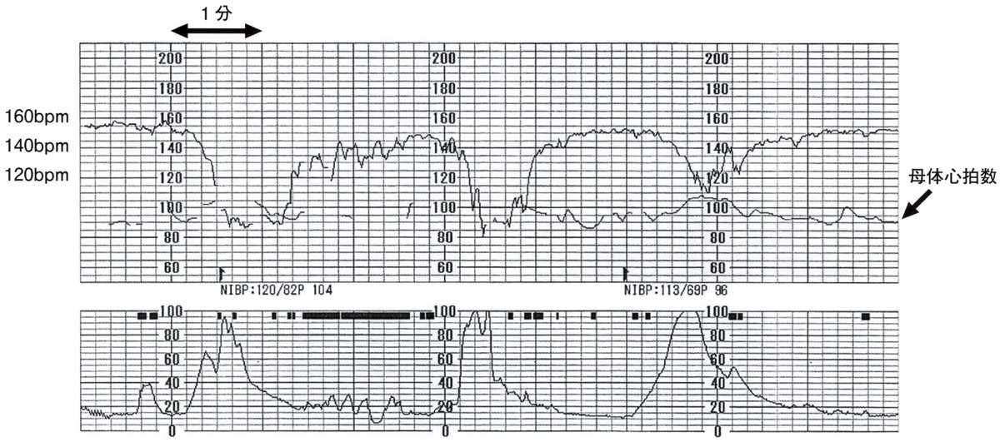
ａ 吸引分娩
ｂ 人工破膜
ｃ 体位変換
ｄ 帝王切開
ｅ 子宮収縮抑制薬投与
✅
ｃ 体位変換
一過性胎児徐脈に対し、まずは非侵襲的な保存的処置（体位変換）を行い、あわせてオキシトシンを減量・中止して児の回復を図る。
🔄 一過性徐脈への初期対応
実際のCTGは参照できないが、子宮口7cm（未全開）・SP−1（高位）の段階で一過性徐脈が出現。この時点でまず行うのは体位変換（左側臥位）などの子宮内蘇生（保存的処置）（選択肢c）。あわせてオキシトシンの減量・中止・酸素投与・輸液を行い、臍帯圧迫や過強陣痛を解除する。
全開大前で吸引分娩はできず、徐脈が一過性で回復するなら直ちに帝王切開とはしない。
□ 選択肢の検討
| 選択肢 | 評価 |
|---|---|
| ａ 吸引分娩 | 不可。子宮口7cmで全開大でなく要件を満たさない |
| ｂ 人工破膜 | 不適。まず保存的処置。破膜で臍帯脱出のリスクも |
| ｃ 体位変換 | 正しい。まず非侵襲的な子宮内蘇生 |
| ｄ 帝王切開 | 性急。一過性徐脈で回復しうる。まず保存的対応 |
| ｅ 子宮収縮抑制薬投与 | 次順位。過強陣痛が原因ならオキシトシン中止が先 |
Q.334(117C-55)★📷 画像70%
36 歳の経産婦（2 妊1 産）。妊娠38 週2 日、破水感を主訴に来院した。これまでの妊娠経過に異常を認めなかった。午前5 時、就寝中に羊水流出感を自覚し、持続するため午前7 時に受診した。内診で分泌物は水様性、BTB 紙で青変、子宮口は3cm 開大、展退度は60％、硬度は軟、児頭下降度はSP ± 0cm であった。入院し経過観察を行うこととした。午後1 時の内診で児頭の矢状縫合は母体骨盤縦径に一致し、小泉門を12 時方向に触知した。胎児心拍数陣痛図で、胎児心拍数基線は145bpm、基線細変動は中等度、繰りかえす早発一過性徐脈を認めた。パルトグラムを示す。
適切な対応はどれか。
適切な対応はどれか。
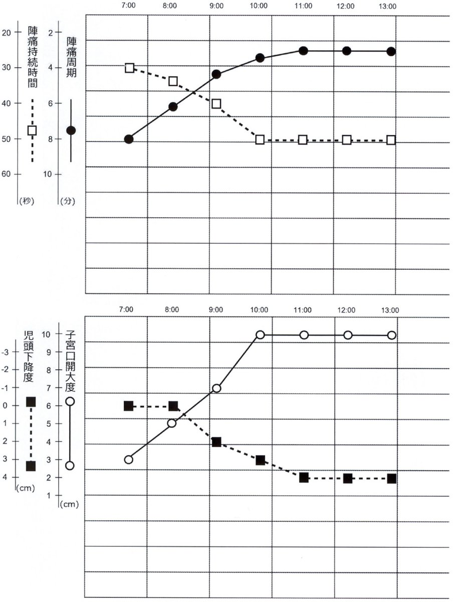
ａ 会陰切開
ｂ 吸引分娩
ｃ 帝王切開
ｄ 子宮底圧出法
ｅ 子宮収縮薬点滴静注
✅
ｂ 吸引分娩
子宮口全開・回旋完了（小泉門12時）で早発一過性徐脈（児頭圧迫の生理的所見）のみであり、吸引分娩で娩出を図る。
🩺 回旋完了＋早発一過性徐脈
午後1時に矢状縫合が縦径一致・小泉門12時方向＝内回旋完了し児頭は低在。CTGは早発一過性徐脈（児頭圧迫による迷走神経反射＝生理的）で基線・細変動は正常。分娩が進行し娩出間近であり、吸引分娩で娩出を図る（選択肢b）。早発徐脈は病的でなく帝王切開の適応にはならない。
□ CTGの異常所見
胎児機能不全を示す胎児心拍数所見：基線細変動の減少・消失、遅発一過性徐脈、高度変動一過性徐脈、遷延徐脈、サイナソイダルパターン。早発一過性徐脈は児頭圧迫による迷走神経反射で生理的（正常）。
□ 選択肢の検討
| 選択肢 | 評価 |
|---|---|
| ａ 会陰切開 | 補助。娩出手技の一部だが主対応は吸引分娩 |
| ｂ 吸引分娩 | 正しい。回旋完了・低在で娩出を図る |
| ｃ 帝王切開 | 不要。早発徐脈は生理的、経腟で娩出可能 |
| ｄ 子宮底圧出法 | 不適。単独では不適切 |
| ｅ 子宮収縮薬点滴 | 不適。既に全開・低在で娩出段階 |
Q.335(117F-55)★88%
32 歳の1 回経産婦（2 妊1 産）。妊娠39 週6 日、規則的な子宮収縮を主訴に来院。午前1 時、10 分ごとの規則的な子宮収縮を自覚し午前4 時に入院。内診で子宮口4cm 開大、展退度60％、硬度中、児頭下降度SP －2cm。午前8 時に破水を認めた。その時点の内診で子宮口6cm 開大、下降度SP －1cm。その後、陣痛周期は3 分となった。午後1 時の内診で子宮口全開大、児頭下降度SP ＋2cm、先進する小泉門を1 時方向に触知し、矢状縫合はほぼ母体の骨盤縦径に一致。この時点の陣痛周期は3 分、持続時間は1 分。
この産婦の分娩経過で正しいのはどれか。
この産婦の分娩経過で正しいのはどれか。
ａ 遷延分娩
ｂ 早期破水
ｃ 微弱陣痛
ｄ 分娩停止
ｅ 後方後頭位
✅
ｂ 早期破水
子宮収縮開始（午前1時＝分娩開始）後、全開大前の子宮口6cm時に破水しており、早期破水である。
💧 破水の分類
・前期破水：分娩開始（陣痛）前の破水・早期破水：分娩開始後〜子宮口全開大前の破水
・適時破水：子宮口全開大ころの破水
本例は午前1時に規則的陣痛（分娩開始）、午前8時に子宮口6cm（未全開）で破水＝早期破水（選択肢b）。陣痛は3分周期・持続1分と有効で微弱陣痛・遷延ではない。小泉門1時・矢状縫合縦径＝正常回旋（後方後頭位でない）。
□ 選択肢の検討
| 選択肢 | 評価 |
|---|---|
| ａ 遷延分娩 | 誤り。順調に全開大へ進行 |
| ｂ 早期破水 | 正しい。分娩開始後・全開大前の破水 |
| ｃ 微弱陣痛 | 誤り。3分周期・持続1分で有効陣痛 |
| ｄ 分娩停止 | 誤り。進行が停止していない |
| ｅ 後方後頭位 | 誤り。小泉門1時（前方）で正常回旋 |
Q.336(116C-50)★📷 画像61%
36 歳の女性（1 妊0 産）。破水感を主訴に来院した。これまでの妊娠経過に異常を認めない。妊娠37 週1 日、午前6 時に破水感を自覚し午前8 時に受診した。身長148cm、体重54kg（非妊時46kg）。体温37.3℃。脈拍92/ 分、整。血圧132/76mmHg。呼吸数18/ 分。腟鏡診で羊水の流出を認める。内診で子宮口は2cm 開大、展退度は40％、硬度は硬、先進部は頭部で下降度はSP ＋1cm だった。午前10 時に陣痛が発来し経過観察したところ、午後1 時から4 分ごとの規則的な子宮収縮を認めた。午後6 時の時点で子宮口は3cm 開大、展退度は50％、先進部はSP ＋2cm、児頭の矢状縫合は母体骨盤の縦径にほぼ一致し、大泉門を1 時方向に触知する。陣痛は4 分間隔で、持続時間が1 分30 秒である。母体の身長を考慮し入院時に行った産科的骨盤計測写真を示す。
診断はどれか。
診断はどれか。
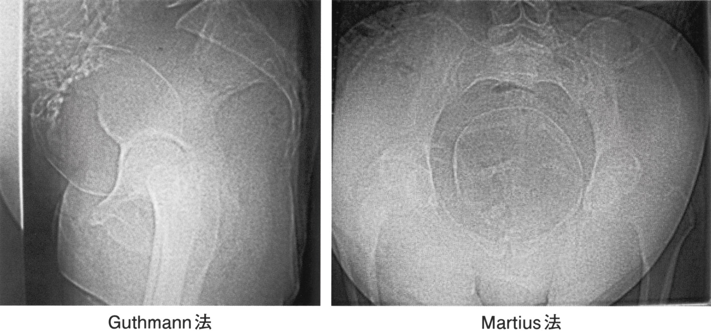
ａ 遷延分娩
ｂ 微弱陣痛
ｃ 分娩停止
ｄ 前方前頭位
ｅ 児頭骨盤不均衡
✅
ｄ 前方前頭位
大泉門を先進部として触知しており児頭が屈曲不全（反屈）で、矢状縫合が縦径・大泉門1時方向の前方前頭位である。
🔄 大泉門先進＝反屈位（前頭位）
正常分娩では屈曲して小泉門が先進する。本例は大泉門を先進部として触知＝屈曲不全（反屈）。矢状縫合が縦径に一致し、大泉門が前方（1時方向）＝前方前頭位（第1回旋の異常）（選択肢d）。
低身長でCPDの懸念もあるが、内診所見が直接示すのは前方前頭位。反屈位は児頭が骨盤を通りにくく分娩が遷延しやすい。
□ 回旋異常の分類
第1回旋（屈曲）の異常＝反屈位：前頭位・額位・顔位（屈曲不全で大泉門〜前頭〜顔が先進）第2回旋（内回旋）の異常：
・後方後頭位：後頭が後方（仙骨側）に回旋（小泉門が後方＝6時方向へ）
・低在横定位：骨盤底で矢状縫合が横径のまま停止（小泉門が3時／9時方向）
※高在縦定位は骨盤入口で矢状縫合が縦径のまま下降できない進入（陥入）の異常で、内回旋そのものの異常とは区別される。横位・骨盤位は胎位異常（回旋以前の問題）。
□ 選択肢の検討
| 選択肢 | 評価 |
|---|---|
| ａ 遷延分娩 | 未達。時間だけでは遷延の基準（経産15h/初産30h）に至らない |
| ｂ 微弱陣痛 | 誤り。4分間隔・持続1分30秒で有効 |
| ｃ 分娩停止 | 誤り。緩徐だが進行はしている |
| ｄ 前方前頭位 | 正しい。大泉門先進・縦径一致の反屈位 |
| ｅ 児頭骨盤不均衡 | この所見だけでは断定不可。診断は前方前頭位 |
Q.337(116F-43)★77%
34 歳の女性（2 妊1 産）。妊娠39 週5 日に陣痛発来のため入院。第1 子を2 年前に正常経腟分娩。入院時、胎児心拍を母体の左下腹部で聴取する。内診で子宮口開大度5cm、展退度70％、下降度SP －2cm、先進部は小泉門で3 時方向、矢状縫合は骨盤横径に一致。入院から5 時間後に子宮口全開大し、その10 分後に自然破水。羊水混濁は認めない。この時点で先進部は小泉門で12 時方向、矢状縫合は骨盤縦径に一致。
正しいのはどれか。
正しいのはどれか。
ａ 第2 回旋の異常である。
ｂ 産瘤は右頭頂骨後部にできる。
ｃ 骨重積は右頭頂骨が左頭頂骨の下になる。
ｄ 第4 回旋で児の顔面は母体の左側へ向く。
ｅ 体幹娩出時に左側の肩甲が先に娩出される。
✅
ｂ 産瘤は右頭頂骨後部にできる。
胎児心拍を左下腹部で聴取＝第1頭位（児背左）で、産瘤は先進する右頭頂骨後部にできる。
🔄 第1頭位の分娩機転
胎児心拍を母体左下腹部で聴取＝第1頭位（児背が母体左・頭位）（Q371と同じ聴取部位）。小泉門3時→12時へ回旋（正常な内回旋完了）。
第1頭位では右頭頂骨後部が先進するため、産瘤は右頭頂骨後部にできる（選択肢b）。
第4回旋（外回旋）では、後頭が娩出後に児の顔は母体の右側へ向く（児背が左なので）。
□ 選択肢の検討
| 選択肢 | 評価 |
|---|---|
| ａ 第2回旋の異常である | 誤り。小泉門12時へ正常に内回旋完了 |
| ｂ 産瘤は右頭頂骨後部にできる | 正しい。第1頭位の先進部 |
| ｃ 骨重積は右頭頂骨が左頭頂骨の下 | 誤り。重積の向きが逆（記述として不適） |
| ｄ 第4回旋で顔は母体左側へ | 誤り。第1頭位（児背左）では顔は右側へ |
| ｅ 左側の肩甲が先に娩出 | 誤り。前在（母体腹壁側）の肩甲が先に娩出 |
Q.338(116F-46)★📷 画像83%
32 歳の初妊婦。陣痛発来を主訴に来院した。これまでの妊娠経過に異常を認めない。妊娠41 週0 日午前1 時から10 分間隔の規則的な子宮収縮を自覚し、次第に周期が短くなったため午前9 時に来院した。身長156cm、体重71kg（非妊時63kg）。体温37.1℃。脈拍92/ 分、整。血圧128/74mmHg。呼吸数20/ 分。内診で分泌物は血性、子宮口は5cm 開大、展退度60％、硬度は中、先進部は児頭で下降度SP ＋1cm であった。胎胞を触知し、胎児心拍数陣痛図で胎児心拍数パターンに異常を認めず、陣痛周期は5 分、持続時間は1 分20 秒であった。午後3 時、子宮口は9cm 開大、展退度100％、児頭下降度SP ＋3cm であった。児頭の矢状縫合は母体骨盤縦径に一致し、小泉門を0 時方向に触れる。この時点の胎児心拍数陣痛図を示す。
適切な対応はどれか。
適切な対応はどれか。
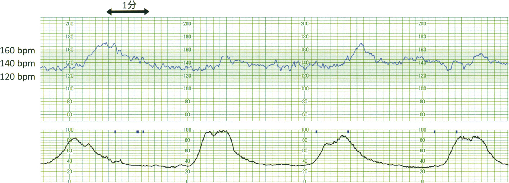
ａ 吸引分娩
ｂ 経過観察
ｃ 骨盤計測
ｄ 帝王切開
ｅ オキシトシン投与
✅
ｂ 経過観察
子宮口9cmまで順調に開大し、回旋も正常（小泉門0時＝12時）でCTGも異常なく、経過観察でよい。
🩺 順調な分娩進行
午前9時の子宮口5cm → 午後3時に9cm開大、展退度100％、SP+3と順調に進行。小泉門0時（12時＝前方）・矢状縫合縦径一致＝内回旋完了で正常、CTGも異常なし。まもなく全開・娩出が期待でき、介入は不要で経過観察（選択肢b）。
□ 選択肢の検討
| 選択肢 | 評価 |
|---|---|
| ａ 吸引分娩 | 時期尚早。全開大前で要件を満たさない |
| ｂ 経過観察 | 正しい。順調な進行で介入不要 |
| ｃ 骨盤計測 | 不要。順調に下降しCPDを疑わない |
| ｄ 帝王切開 | 不要。異常所見がない |
| ｅ オキシトシン投与 | 不要。有効陣痛で自然進行中 |
Q.339(115F-46)★📷 画像71%
34 歳の初妊婦（1 妊0 産）。妊娠38 週1 日、午前2 時に規則的な子宮収縮と破水感のため来院した。これまでの妊娠経過に異常は指摘されていない。既往歴に特記すべきことはない。身長147cm、体重62kg（非妊時50kg）。体温36.4℃。脈拍76/ 分、整。血圧132/74mmHg。呼吸数18/ 分。子宮底40cm、腹囲90cm。内診所見は、先進部は児頭を触知し、子宮口は2cm 開大、展退度は50％、児頭下降度はSP －3cm。推定胎児体重は3,880g であった。陣痛発来と前期破水の診断にて入院となった。陣痛は徐々に増強し、午前8 時の内診で、子宮口8cm 開大、児頭下降度はSP －1cm、小泉門を1 時方向に触知した。午前10 時、子宮口は全開大したが、児頭下降度と児頭の回旋は変わらなかった。陣痛周期は2 ～3 分間隔で持続時間は40 秒。午後2 時の時点で内診所見は変わらない。この時点の胎児心拍数陣痛図を示す。
適切な対応はどれか。
適切な対応はどれか。
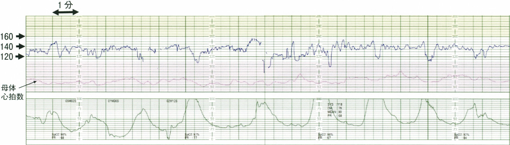
ａ 会陰切開
ｂ 吸引分娩
ｃ 経過観察
ｄ 帝王切開
ｅ オキシトシン投与
✅
ｄ 帝王切開
低身長・巨大児（3,880g）で全開大後4時間、陣痛があっても児頭が下降せず分娩停止（CPD）であり、帝王切開を行う。
🩺 分娩停止・CPD → 帝王切開
身長147cmの低身長＋推定体重3,880gの巨大児。午前10時に全開大したが午後2時まで児頭下降度SP−1・回旋とも変化なし（4時間停止）。陣痛は保たれているのに児頭が下降しない＝児頭骨盤不均衡〈CPD〉による分娩停止であり、帝王切開を行う（選択肢d）。
児頭が高く（SP−1）回旋も進まないため吸引分娩は不適。
□ 選択肢の検討
| 選択肢 | 評価 |
|---|---|
| ａ 会陰切開 | 無意味。児頭が下降していない |
| ｂ 吸引分娩 | 不可。SP−1で高位、CPDが背景 |
| ｃ 経過観察 | 不適。4時間停止を放置できない |
| ｄ 帝王切開 | 正しい。CPDによる分娩停止 |
| ｅ オキシトシン投与 | 禁忌に近い。CPDに陣痛促進は子宮破裂の危険 |
Q.340(113A-10)★2択50%
経腟分娩における第2 回旋の異常はどれか。2 つ選べ。
ａ 額 位
ｂ 横 位
ｃ 高在縦定位
ｄ 後方後頭位
ｅ 低在横定位
✅
ｄ 後方後頭位
ｅ 低在横定位
第2回旋（内回旋）の異常は後方後頭位と低在横定位である。
🔄 第2回旋（内回旋）の異常
第1回旋（屈曲）の異常＝反屈位：前頭位・額位・顔位（屈曲不全で大泉門〜前頭〜顔が先進）第2回旋（内回旋）の異常：
・後方後頭位：後頭が後方（仙骨側）に回旋（小泉門が後方＝6時方向へ）
・低在横定位：骨盤底で矢状縫合が横径のまま停止（小泉門が3時／9時方向）
※高在縦定位は骨盤入口で矢状縫合が縦径のまま下降できない進入（陥入）の異常で、内回旋そのものの異常とは区別される。横位・骨盤位は胎位異常（回旋以前の問題）。
□ 選択肢の検討
| 選択肢 | 評価 |
|---|---|
| ａ 額位 | 第1回旋異常。反屈位 |
| ｂ 横位 | 胎位異常。回旋以前の問題 |
| ｃ 高在縦定位 | 進入の異常。骨盤入口で縦径のまま（内回旋そのものの異常と区別） |
| ｄ 後方後頭位 | 正しい。後頭が後方に回旋（内回旋異常） |
| ｅ 低在横定位 | 正しい。骨盤底で矢状縫合が横径のまま停止 |
Q.341(108G-53)★📷 画像80%
35 歳の初妊婦。妊娠40 週4 日。陣痛発来のため入院した。妊娠39 週時の妊婦健康診査では胎児推定体重は2,450g で、羊水ポケットは3cm と測定された。身長161cm、体重61kg（非妊時52kg）。内診所見は、児頭は骨盤入口部にあり、展退度50％、子宮口は3cm 開大、頸管の硬度はやや軟、児頭下降度SP－2cm。その他に異常所見を認めない。陣痛はほぼ10 分周期である。その後、陣痛は次第に増強し、入院後7 時間経過した時点で破水し、羊水混濁を認めた。内診所見は子宮口は10cm 開大、児頭下降度SP＋1cm となった。その時の胎児心拍数陣痛図（A）と、さらに30 分後の胎児心拍数陣痛図（B）とを示す。内診所見は児頭下降度SP＋3cm で、矢状縫合は骨盤前後径に一致し小泉門を恥骨後面に触れる。
対応として適切なのはどれか。
対応として適切なのはどれか。
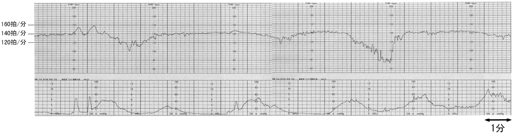
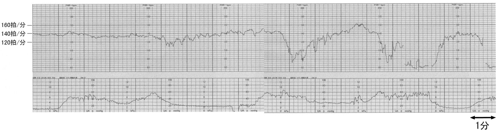
ａ 経過観察
ｂ 吸引分娩
ｃ 体位変換
ｄ 帝王切開術
ｅ 子宮収縮抑制薬投与
✅
ｂ 吸引分娩
全開大・回旋完了（小泉門が恥骨後面＝前方）・低在（SP+3）で、羊水混濁とCTG悪化を伴うため吸引分娩で急速に娩出する。
🩺 全開・低在＋胎児機能不全 → 吸引分娩
子宮口全開・矢状縫合が前後径一致・小泉門が恥骨後面（前方）＝内回旋完了、児頭下降度SP+3の低在。羊水混濁とCTG（B）の悪化（胎児機能不全）があり、速やかな娩出が必要。経腟分娩の要件（全開・低在・回旋完了）を満たすので吸引分娩で急速遂娩（選択肢b）。
□ 選択肢の検討
| 選択肢 | 評価 |
|---|---|
| ａ 経過観察 | 不適。胎児機能不全があり急速遂娩が必要 |
| ｂ 吸引分娩 | 正しい。全開・低在・回旋完了で経腟急速遂娩 |
| ｃ 体位変換 | 不十分。すでに娩出可能で急速遂娩が優先 |
| ｄ 帝王切開術 | 不適。児頭が低在で吸引の方が速く低侵襲 |
| ｅ 子宮収縮抑制薬投与 | 禁忌に近い。娩出すべき状況で抑制は逆行 |
Q.342(106C-9)★📷 画像66%
産科外来に備えられている物品の写真（①～⑤）を示す。
Bishop スコアの決定に必要なのはどれか。
Bishop スコアの決定に必要なのはどれか。
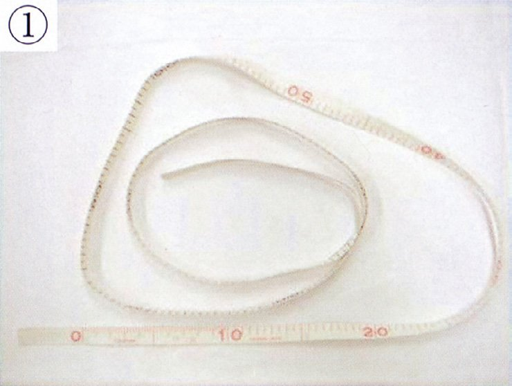
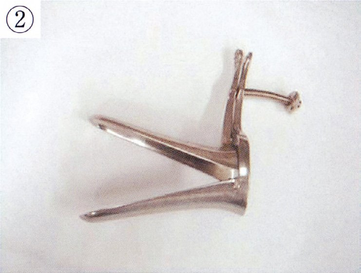
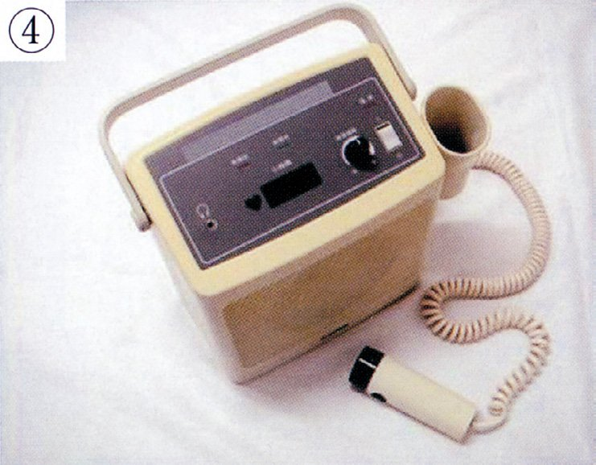
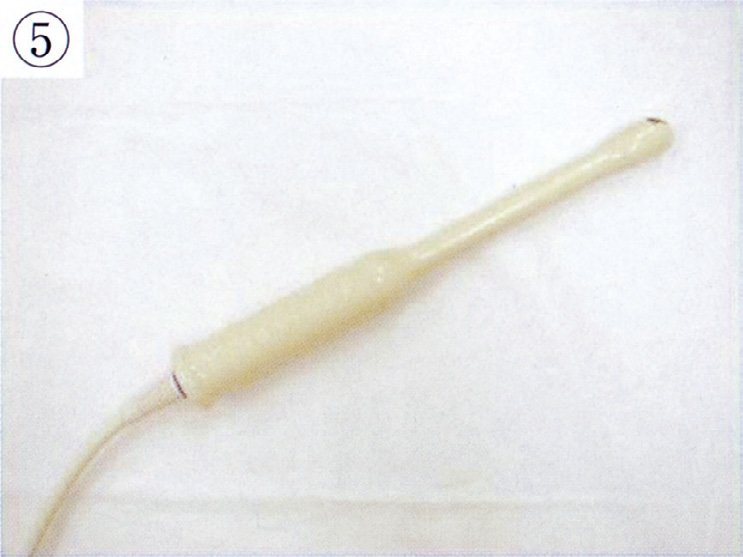
ａ ①
ｂ ②
ｃ ③
ｄ ④
ｅ ⑤
✅
ｃ ③
Bishopスコアは内診（指診）で評価するため、内診に用いる物品（滅菌手袋）が必要（③）。
🖐 Bishopスコアは内診で評価
Bishopスコアは子宮口開大・展退度・児頭下降度・頸部硬度・子宮口位置を内診（指診）で評価する。したがって計測機器ではなく内診に必要な物品（滅菌手袋など）が必要で、写真の③がこれに相当する（選択肢c）。
□ Bishopスコア
| 項目 | 0点 | 1点 | 2点 | 3点 |
|---|---|---|---|---|
| 子宮口開大（cm） | 0 | 1〜2 | 3〜4 | 5〜6 |
| 展退度（%） | 0〜30 | 40〜50 | 60〜70 | 80〜 |
| 児頭下降度（SP） | −3 | −2 | −1〜0 | +1〜 |
| 頸部硬度 | 硬 | 中 | 軟 | — |
| 子宮口位置 | 後 | 中 | 前 | — |
Bishopスコアは子宮頸管の熟化度を評価（最高13点）。9点以上で熟化良好（経腟分娩・分娩誘発が成功しやすい）、4点以下は熟化不良で頸管熟化を促してから誘発する。「口唇状の柔らかさ」は頸部硬度＝中（1点）に相当する。
□ 選択肢の検討
| 選択肢 | 評価 |
|---|---|
| ａ〜ｂ・ｄ〜ｅ ①②④⑤ | 不適。骨盤計測器やドプラ等でBishopの評価には使わない |
| ｃ ③ | 正しい。内診に用いる物品（Bishopスコアは内診で決定） |
Q.343(101H-12)★📷 画像91%
30 歳の1 回経産婦。前回は妊娠40 週2 日で3,200g を自然経腟分娩。今回の妊娠経過は順調で、妊娠38 週4 日に陣痛発来し入院。陣痛は次第に増強し子宮口も徐々に開大。8 時間後、子宮口全開大、児頭下降度SP ＋2 ～＋3cm、小泉門は9 時の方向に触知。その2 時間後も所見は変わらず、坐骨棘は触知困難で、産瘤を認めない。CTG を示す。
この時点で考えられるのはどれか。
この時点で考えられるのはどれか。
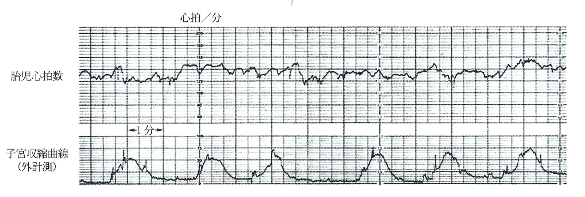
ａ 低在横定位
ｂ 後方後頭位
ｃ 児頭骨盤不均衡
ｄ 続発性微弱陣痛
ｅ non-reassuring fetal status
✅
ａ 低在横定位
全開大・低在（SP+2〜3）だが小泉門が9時（横）のまま2時間進まず、矢状縫合が横径のまま停止した低在横定位である。
🔄 低在横定位
子宮口全開・児頭下降度SP+2〜3の低在まで来たが、小泉門が9時（横）方向のまま2時間所見不変＝矢状縫合が横径のまま骨盤底で停止。これは低在横定位（第2回旋＝内回旋の異常）（選択肢a）。産瘤がなく坐骨棘が触知困難なほど低在しているのに回旋が完了していない点が特徴。
□ 回旋異常の分類
第1回旋（屈曲）の異常＝反屈位：前頭位・額位・顔位（屈曲不全で大泉門〜前頭〜顔が先進）第2回旋（内回旋）の異常：
・後方後頭位：後頭が後方（仙骨側）に回旋（小泉門が後方＝6時方向へ）
・低在横定位：骨盤底で矢状縫合が横径のまま停止（小泉門が3時／9時方向）
※高在縦定位は骨盤入口で矢状縫合が縦径のまま下降できない進入（陥入）の異常で、内回旋そのものの異常とは区別される。横位・骨盤位は胎位異常（回旋以前の問題）。
□ 選択肢の検討
| 選択肢 | 評価 |
|---|---|
| ａ 低在横定位 | 正しい。低在で矢状縫合が横径のまま停止 |
| ｂ 後方後頭位 | 誤り。小泉門は後方（6時）でなく横（9時） |
| ｃ 児頭骨盤不均衡 | 誤り。児頭は低在まで下降しており高位停止でない |
| ｄ 続発性微弱陣痛 | 主因でない。問われているのは回旋の状態 |
| ｅ non-reassuring fetal status | 誤り。CTG異常を示す記載が主眼でない |
A
一般問題
Q.344〜Q.395
Q.344(118F-18)📷 画像73%
児頭が骨盤に陥入した時点でパルトグラムに記載された児頭の回旋所見を示す。
正しいのはどれか。
正しいのはどれか。
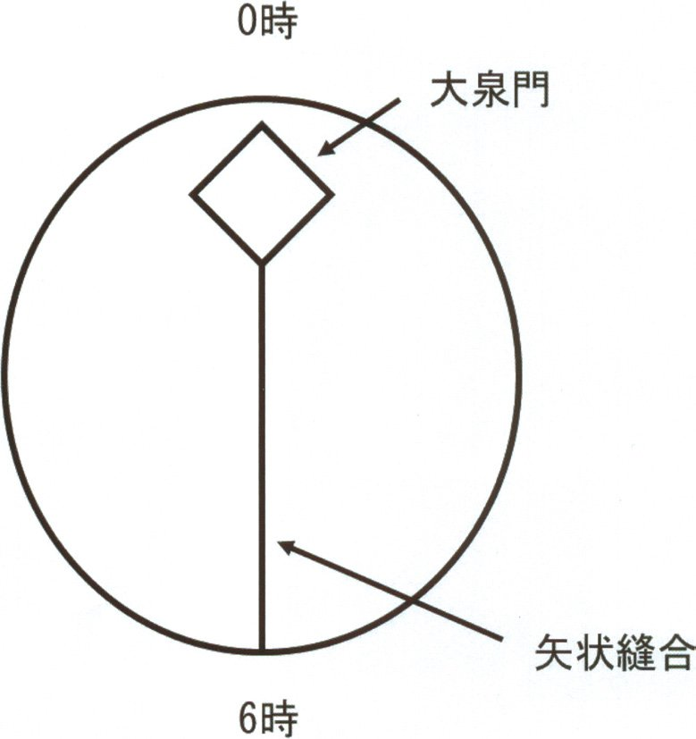
ａ 顔 位
ｂ 高在縦定位
ｃ 後方後頭位
ｄ 前方前頭位
ｅ 低在横定位
✅
ｄ 前方前頭位
パルトグラムの回旋所見が大泉門を先進部（前方）とする屈曲不全を示しており、前方前頭位である。
🔄 パルトグラムの回旋記号
実際の図は参照できないが、本問で正解となる所見＝大泉門が先進部（前方）に描かれた屈曲不全＝反屈位。矢状縫合が縦径で大泉門が前方＝前方前頭位（第1回旋の異常）（選択肢d）。
（顔位はさらに強い反屈、高在縦定位は骨盤入口での縦定位、低在横定位は骨盤底で横径のまま。）
□ 回旋異常の分類
第1回旋（屈曲）の異常＝反屈位：前頭位・額位・顔位（屈曲不全で大泉門〜前頭〜顔が先進）第2回旋（内回旋）の異常：
・後方後頭位：後頭が後方（仙骨側）に回旋（小泉門が後方＝6時方向へ）
・低在横定位：骨盤底で矢状縫合が横径のまま停止（小泉門が3時／9時方向）
※高在縦定位は骨盤入口で矢状縫合が縦径のまま下降できない進入（陥入）の異常で、内回旋そのものの異常とは区別される。横位・骨盤位は胎位異常（回旋以前の問題）。
□ 選択肢の検討
| 選択肢 | 評価 |
|---|---|
| ａ 顔位 | 誤り。顔位は完全反屈で顎が先進 |
| ｂ 高在縦定位 | 誤り。骨盤入口で縦径のまま下降しない病態 |
| ｃ 後方後頭位 | 誤り。小泉門が後方に回旋する内回旋異常 |
| ｄ 前方前頭位 | 正しい。大泉門先進の反屈位 |
| ｅ 低在横定位 | 誤り。骨盤底で横径のまま停止 |
Q.345(115A-62)96%
①42 歳の初産婦（1 妊0 産）。妊娠36 週の妊婦健康診査のため来院した。②不妊のため5 年間の治療歴があり、体外受精- 胚移植で妊娠に至った。妊娠初期に2 絨毛膜2 羊膜性双胎と診断され、以降の妊婦健康診査において異常は認めなかった。③33 歳時に卵巣子宮内膜症性囊胞に対して腹腔鏡下卵巣囊胞摘出術の既往がある。身長162cm、体重66kg（非妊時58kg）。体温36.8℃。脈拍78/ 分、整。血圧126/74mmHg。呼吸数18/ 分。超音波検査所見：④推定胎児体重は先進児2,680g、後続児2,480g。⑤胎位は先進児が骨盤位、後続児が頭位だった。羊水量に明らかな異常は認めなかった。
下線部のうち経腟分娩の可否を判断する上で最も重要な情報はどれか。
下線部のうち経腟分娩の可否を判断する上で最も重要な情報はどれか。
ａ ①
ｂ ②
ｃ ③
ｄ ④
ｅ ⑤
✅
ｅ ⑤
双胎の分娩様式は先進児（第1子）の胎位で決まり、先進児が骨盤位である⑤が経腟分娩の可否判断に最も重要。
👶👶 双胎の分娩様式
双胎の分娩様式は先進児（第1子）の胎位が決め手。先進児が頭位なら経腟分娩を試みられるが、先進児が骨盤位（⑤）だと後続児との児頭嵌合（locking）等の危険があり帝王切開が選ばれやすい。
したがって経腟分娩の可否判断に最も重要なのは⑤の胎位（選択肢e）。年齢・不妊治療歴・腹腔鏡既往・児の推定体重も情報だが、分娩様式の第一決定因子は先進児の胎位。
□ 選択肢の検討
| 選択肢 | 評価 |
|---|---|
| ａ ①高齢初産 | 一情報だが分娩様式の決定因子ではない |
| ｂ ②不妊治療・IVF | 妊娠成立の背景で分娩様式の決定因子でない |
| ｃ ③腹腔鏡下卵巣手術既往 | 子宮筋層の手術ではなく子宮破裂リスクは高くない |
| ｄ ④推定胎児体重 | 重要だが第一決定因子は胎位 |
| ｅ ⑤胎位（先進児骨盤位） | 正しい。先進児の胎位が分娩様式を決める |
Q.346(115C-30)2択93%
分娩開始と判断する所見はどれか。2 つ選べ。
ａ 破 水
ｂ 児頭の下降
ｃ 子宮口開大の開始
ｄ 陣痛周期が10 分以内
ｅ 陣痛頻度が1 時間に6 回以上
✅
ｄ 陣痛周期が10 分以内
ｅ 陣痛頻度が1 時間に6 回以上
分娩開始は規則的な陣痛が10分以内の周期（または1時間に6回以上）になった時点とする。
⏱ 分娩開始の定義
分娩開始＝規則的な子宮収縮（陣痛）が10分以内の周期、または1時間に6回以上になった時点（選択肢d・e）。破水・児頭下降・子宮口開大の開始は分娩開始の定義そのものではない（破水は前期破水もあり、開大や下降は陣痛に伴って進む結果）。
□ 選択肢の検討
| 選択肢 | 評価 |
|---|---|
| ａ 破水 | 誤り。前期破水（陣痛前）もあり定義でない |
| ｂ 児頭の下降 | 誤り。陣痛に伴う結果であり開始の定義でない |
| ｃ 子宮口開大の開始 | 誤り。定義は陣痛の周期 |
| ｄ 陣痛周期が10分以内 | 正しい。分娩開始の定義 |
| ｅ 陣痛頻度が1時間に6回以上 | 正しい。10分以内周期と同義 |
Q.347(115C-59)📷 画像3択71%
33 歳の初産婦（1 妊0 産）。妊娠39 週5 日、規則的な子宮収縮を主訴に来院した。これまでの妊娠経過に異常は認めなかった。午前3 時、10 分間隔の子宮収縮を自覚し、次第に増強したため午前8 時に来院した。内診所見は、分泌物は粘液性で一部血性、子宮口は2cm 開大、展退度は80％、硬度は軟、児頭下降度はSP －2cm であった。入院し経過観察をしていたが、12 時の時点で破水を認めた。17 時の時点で分娩には至っていない。パルトグラムを示す。
診断はどれか。3 つ選べ。
診断はどれか。3 つ選べ。
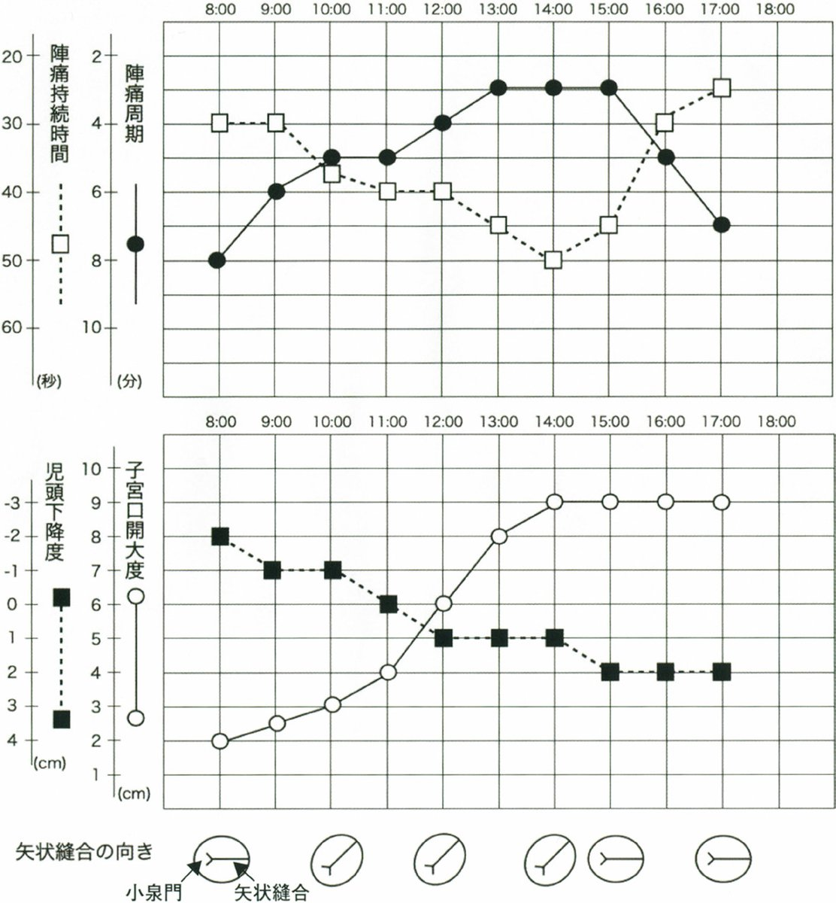
ａ 適時破水
ｂ 微弱陣痛
ｃ 分娩停止
ｄ 後方後頭位
ｅ 低在横定位
✅
ｂ 微弱陣痛
ｃ 分娩停止
ｅ 低在横定位
長時間かけても分娩が進まず、微弱陣痛・分娩停止に加え、回旋も進まない低在横定位が診断される。
🩺 分娩遷延の原因
午前8時から17時まで経過しても分娩に至らず、パルトグラムで進行が停滞。複合的に：
・微弱陣痛（有効な子宮収縮が得られない）
・分娩停止（一定時間、開大・下降が進まない）
・低在横定位（矢状縫合が横径のまま停止する内回旋異常）
の3つが該当する（選択肢b・c・e）。
□ 選択肢の検討
| 選択肢 | 評価 |
|---|---|
| ａ 適時破水 | 誤り。全開大前（12時破水）で早期破水 |
| ｂ 微弱陣痛 | 正しい。進行しない有効陣痛の欠如 |
| ｃ 分娩停止 | 正しい。進行の停止 |
| ｄ 後方後頭位 | 誤り。所見は横定位（後方でない） |
| ｅ 低在横定位 | 正しい。横径のまま停止 |
Q.348(114C-49)96%
29 歳の女性（1 妊1 産）。分娩後1 日で入院中。妊娠38 週0 日で骨盤位のため帝王切開分娩となった。術中出血量800mL で術中術後の経過は順調。術後の初回歩行を開始したところ、突然の呼吸困難と胸痛を訴えた。意識は清明。身長154cm、体重77kg。脈拍104/ 分、整。血圧128/76mmHg。呼吸数26/ 分。SpO2 92％（room air）。呼吸音に異常を認めない。
最も考えられるのはどれか。
最も考えられるのはどれか。
ａ 羊水塞栓症
ｂ 急性心筋梗塞
ｃ 周産期心筋症
ｄ 肺血栓塞栓症
ｅ 急性大動脈解離
✅
ｄ 肺血栓塞栓症
帝王切開後・肥満・初回歩行時の突然の呼吸困難・胸痛・低酸素は、深部静脈血栓に由来する肺血栓塞栓症を示唆する。
🫁 産褥の肺血栓塞栓症
妊娠・産褥は凝固能亢進・静脈うっ滞で血栓症リスクが高い。本例は帝王切開後・肥満（BMI高値）・術後臥床→初回歩行時という深部静脈血栓症〈DVT〉→肺血栓塞栓症〈PE〉の典型的発症状況。「歩行開始直後の突然の呼吸困難・胸痛・SpO2低下・頻脈」はPEを強く示唆する（選択肢d）。呼吸音正常でも否定できない。
□ 選択肢の検討
| 選択肢 | 評価 |
|---|---|
| ａ 羊水塞栓症 | 低い。分娩中〜直後の急変で、術後1日・歩行時発症は非典型 |
| ｂ 急性心筋梗塞 | 低い。若年で誘因・心電図変化の記載なし |
| ｃ 周産期心筋症 | 低い。心不全（起坐呼吸・浮腫）が主で急な胸痛と違う |
| ｄ 肺血栓塞栓症 | 正しい。術後・肥満・初回歩行時の突然の呼吸困難 |
| ｅ 急性大動脈解離 | 低い。血圧左右差・引き裂く背部痛の記載なし |
Q.349(114C-52)📷 画像89%
28 歳の初産婦（1 妊0 産）。妊娠40 週0 日午前0 時に破水感があり、規則的な子宮収縮が出現し午前1 時に来院。来院時、児は第1 頭位で胎児心拍数は正常、腟鏡診で羊水流出を認め、内診で子宮口3cm 開大。午前5 時、子宮収縮5 分間隔、内診で子宮口6cm 開大、児頭下降度SP ± 0cm、大泉門は母体の右側、小泉門は母体の左側、矢状縫合は骨盤横径に一致。午前9 時、子宮収縮3 分間隔、内診で子宮口9cm 開大、児頭下降度SP ＋2cm。内診で得られた児頭の所見（①～⑤）を示す。
正常な回旋をしているのはどれか。
正常な回旋をしているのはどれか。
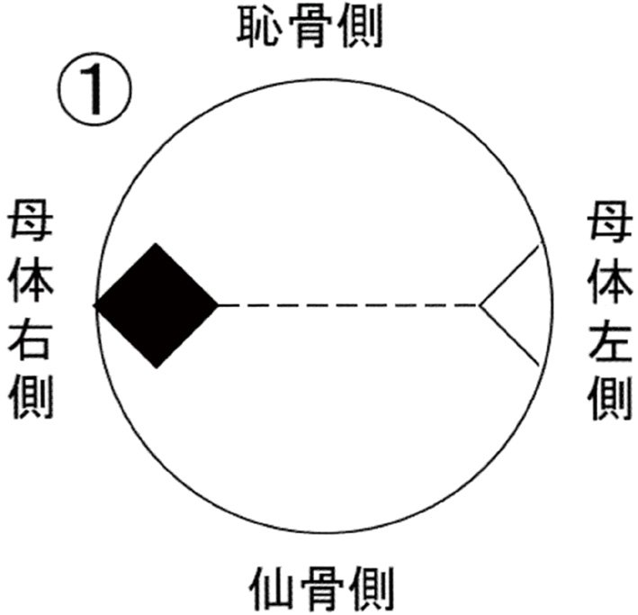
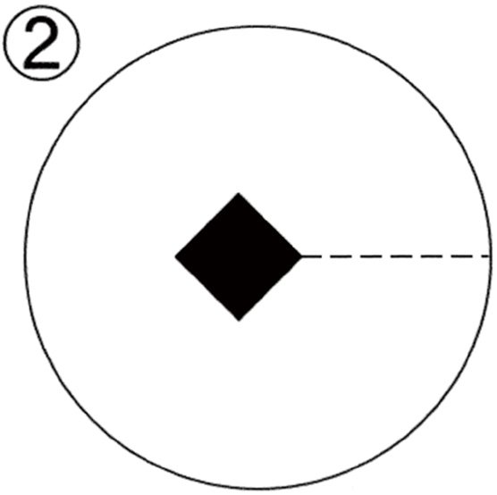
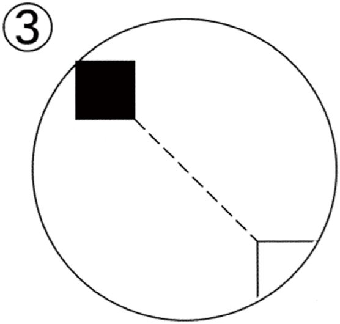
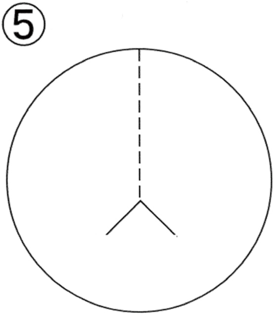

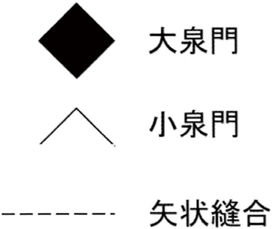
ａ ①
ｂ ②
ｃ ③
ｄ ④
ｅ ⑤
✅
ｄ ④
正常な内回旋では下降に伴い小泉門が母体前方（恥骨側）へ回旋しており、その所見（④）が正常。
🔄 正常な内回旋の所見
実際の図は参照できないが、正常な第2回旋では児頭の下降とともに小泉門（後頭）が母体前方（12時＝恥骨側）へ回旋する。本例は午前5時に小泉門が母体左（横）だったものが、下降に伴い前方へ回旋していくのが正常経過。小泉門が前方へ向かう所見（④）が正常な回旋（選択肢d）。
小泉門が横のまま（低在横定位）や後方（後方後頭位）、大泉門先進（反屈位）は異常。
□ 児頭の回旋
| 回旋 | 別名 | 内容 | 異常 |
|---|---|---|---|
| 第1回旋 | 屈曲（顎を胸に引く） | 児頭が下降しながら屈曲し小泉門が先進する | 異常＝反屈位（前頭位・額位・顔位） |
| 第2回旋 | 内回旋 | 矢状縫合が骨盤横径→縦径へ。後頭が恥骨側（前方）へ回る | 異常＝後方後頭位・低在横定位 |
| 第3回旋 | 伸展（反屈） | 恥骨結合を支点に児頭が伸展して娩出（発露）。顔は母体背側（仙骨側）を向く | — |
| 第4回旋 | 外回旋 | 娩出した児頭が肩甲の内回旋に伴い横（母体側方）を向く | — |
□ 選択肢の検討
| 選択肢 | 評価 |
|---|---|
| ａ〜ｃ・ｅ ①②③⑤ | 異常回旋。横定位・後方後頭位・反屈位などに相当 |
| ｄ ④ | 正しい。小泉門が前方へ回旋する正常な内回旋 |
Q.350(113C-48)📷 画像90%
34 歳の初産婦（1 妊0 産）。妊娠39 週4 日の午前6 時に陣痛発来のため入院した。これまでの妊娠経過は順調であった。午後4 時に子宮口は全開大した。午後6 時50 分に破水し、内診で児頭下降度はSP ＋4cm、0 時方向に小泉門を触知した。この時点での胎児心拍数陣痛図を示す。
対応として最も適切なのはどれか。
対応として最も適切なのはどれか。
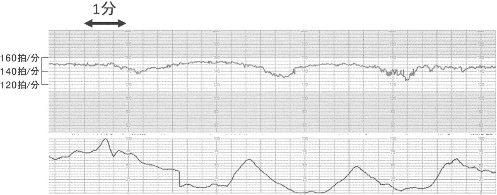
ａ 吸引分娩
ｂ 帝王切開
ｃ 抗菌薬投与
ｄ 陣痛促進薬投与
ｅ 子宮収縮抑制薬投与
✅
ａ 吸引分娩
全開大・回旋完了（小泉門0時＝前方）・低在（SP+4）で娩出間近であり、CTG所見に応じて吸引分娩で娩出する。
🩺 全開・低在・回旋完了 → 吸引分娩
午後4時全開大後、児頭下降度SP+4の低在・小泉門0時（12時＝前方）で内回旋完了。全開大後2時間以上経過し（第2期遷延傾向）、CTGの徐脈など速やかな娩出を要する所見があれば、経腟分娩の要件を満たすので吸引分娩で娩出（選択肢a）。
□ 選択肢の検討
| 選択肢 | 評価 |
|---|---|
| ａ 吸引分娩 | 正しい。全開・低在・回旋完了で経腟急速遂娩 |
| ｂ 帝王切開 | 不適。児頭が低在で吸引の方が速く低侵襲 |
| ｃ 抗菌薬投与 | 不適。感染徴候の記載がなく娩出が優先 |
| ｄ 陣痛促進薬投与 | 不適。すでに全開・低在で娩出段階 |
| ｅ 子宮収縮抑制薬投与 | 禁忌に近い。娩出すべき状況で抑制は逆行 |
Q.351(113F-49)97%
34 歳の初産婦（1 妊0 産）。妊娠37 週6 日の午前0 時に破水感があり、午前1 時に受診した。妊婦健康診査は妊娠8 週から受けており、特に異常は指摘されていない。来院時、羊水の流出を認め、混濁はなかった。内診で子宮口は3cm 開大していた。その後の分娩経過記録を以下に示す。午前3 時：子宮収縮は10 分間隔、子宮口は5cm 開大。午前10 時：子宮口は全開大。午前11 時：2,850g の女児を娩出。児娩出後、子宮収縮は不良で子宮底マッサージとオキシトシンの点滴投与を行ったが胎盤は自然娩出されず。午前11 時30 分：胎盤用手剝離術により胎盤娩出。胎盤娩出後には子宮収縮は良好となり止血。分娩時の出血量は1,200mL。
正しいのはどれか。
正しいのはどれか。
ａ 分娩の開始は午前0 時である。
ｂ 適時破水である。
ｃ 分娩第1 期は11 時間である。
ｄ 分娩第3 期は30 分間である。
ｅ 分娩時出血量は正常範囲である。
✅
ｄ 分娩第3 期は30 分間である。
児娩出（午前11時）から胎盤娩出（午前11時30分）までの30分間が分娩第3期である。
⏱ 分娩各期の判定
分娩第3期＝児娩出〜胎盤娩出なので、午前11時（児娩出）〜午前11時30分（胎盤娩出）の30分間が第3期（選択肢d）。・分娩開始は「規則的陣痛の発来」時点（本例は午前3時ころに10分間隔）で、破水感（午前0時）ではない
・全開大前（子宮口5cm時）に破水しており前期破水（陣痛前破水）＝適時破水ではない
・分娩時出血1,200mLは正常上限500mLを大きく超え異常出血（弛緩出血）で正常範囲でない
□ 分娩の各期
分娩第1期（開口期）：分娩開始（10分以内周期の規則的陣痛）〜子宮口全開大。最も長い。初産12〜15時間、経産5〜8時間程度分娩第2期（娩出期）：子宮口全開大〜児娩出。初産1〜2時間、経産0.5〜1時間（60分以下）
分娩第3期（後産期）：児娩出〜胎盤娩出。15〜30分程度
遷延分娩：初産30時間以上／経産15時間以上。分娩時出血量の正常上限は約500mL（経腟）（これを超えると分娩時異常出血）。
□ 選択肢の検討
| 選択肢 | 評価 |
|---|---|
| ａ 分娩開始は午前0時 | 誤り。破水感でなく規則的陣痛の発来が分娩開始 |
| ｂ 適時破水 | 誤り。全開大前の破水で前期破水 |
| ｃ 分娩第1期は11時間 | 誤り。分娩開始〜全開大で11時間にならない |
| ｄ 分娩第3期は30分間 | 正しい。児娩出〜胎盤娩出 |
| ｅ 出血量は正常範囲 | 誤り。1,200mLは異常出血 |
Q.352(112F-7)57%
正常頭位分娩について正しいのはどれか。
ａ 児頭の第2 回旋と第4 回旋は同方向である。
ｂ 児頭の第4 回旋は発露とほぼ同時に起こる。
ｃ 児頭の第1 回旋と第3 回旋は同じ動きである。
ｄ 児の肩甲はその肩幅が骨盤最大径に一致するように回旋する。
ｅ 児の肩甲は母体の背側にある肩甲から先に母体外に娩出される。
✅
ｄ 児の肩甲はその肩幅が骨盤最大径に一致するように回旋する。
娩出時、児の肩甲は肩幅（肩甲間径）が骨盤の最大径に一致するように回旋して通過する。
🔄 肩甲の娩出機転
児頭娩出後、児の肩甲は肩甲間径を骨盤の最大径（縦径）に合わせるよう回旋して通過する（＝児頭の第4回旋＝外回旋に対応、選択肢d）。誤りの選択肢：
・第2回旋（内回旋）と第4回旋（外回旋）は逆方向（外回旋は内回旋の戻り）
・第4回旋は児頭娩出後に肩甲娩出に伴って起こる（発露と同時ではない）
・第1回旋（屈曲）と第3回旋（伸展）は逆の動き
・肩甲は前在（母体腹壁側）の肩甲が先に娩出される（背側でない）
□ 児頭の回旋
| 回旋 | 別名 | 内容 | 異常 |
|---|---|---|---|
| 第1回旋 | 屈曲 | 児頭が屈曲し小泉門が先進 | 反屈位（前頭位・額位・顔位） |
| 第2回旋 | 内回旋 | 矢状縫合が横径→縦径、後頭が前方へ | 後方後頭位・低在横定位 |
| 第3回旋 | 伸展 | 恥骨結合を支点に伸展して娩出。顔は母体背側を向く | — |
| 第4回旋 | 外回旋 | 娩出した児頭が肩甲の内回旋に伴い横を向く | — |
□ 選択肢の検討
| 選択肢 | 評価 |
|---|---|
| ａ 第2回旋と第4回旋は同方向 | 誤り。外回旋は内回旋の逆戻り |
| ｂ 第4回旋は発露とほぼ同時 | 誤り。児頭娩出後の肩甲娩出時 |
| ｃ 第1回旋と第3回旋は同じ動き | 誤り。屈曲と伸展で逆 |
| ｄ 肩甲は肩幅が骨盤最大径に一致するよう回旋 | 正しい |
| ｅ 背側の肩甲が先に娩出 | 誤り。前在（腹壁側）が先 |
Q.353(112F-26)72%
頭位正常分娩の分娩第1 期の内診で触れないのはどれか。
ａ 岬 角
ｂ 尾 骨
ｃ 坐骨棘
ｄ 小泉門
ｅ 矢状縫合
✅
ａ 岬 角
岬角は正常骨盤では内診で触れず、触れる場合は骨盤が狭い（児頭骨盤不均衡）ことを示唆する。
🖐 内診で触れるもの・触れないもの
岬角（仙骨岬）は正常な骨盤では届かず触れない。内診で岬角が触れる＝対角結合線が短い＝狭骨盤・児頭骨盤不均衡を示唆する所見（選択肢a）。一方、尾骨・坐骨棘（下降度の基準）・小泉門（先進部）・矢状縫合はいずれも正常分娩で触知できる。
□ 選択肢の検討
| 選択肢 | 評価 |
|---|---|
| ａ 岬角 | 正しい（触れない）。触れれば狭骨盤を示唆 |
| ｂ 尾骨 | 触れる。骨盤後壁 |
| ｃ 坐骨棘 | 触れる。下降度の基準点 |
| ｄ 小泉門 | 触れる。頭位の先進部 |
| ｅ 矢状縫合 | 触れる。回旋の判定に用いる |
Q.354(112F-55)80%
28 歳の初産婦。妊娠39 週0 日に陣痛発来のため入院。入院時の内診で子宮口3cm 開大、展退度50％、児頭下降度SP －2cm、硬さは中等硬、位置は後方である。
この患者のBishop スコアはどれか。
この患者のBishop スコアはどれか。
ａ 5 点
ｂ 6 点
ｃ 7 点
ｄ 8 点
ｅ 9 点
✅
ａ 5 点
開大2点＋展退1点＋下降1点＋硬度1点＋位置0点＝5点である。
🧮 Bishopスコアの計算
各項目を配点する：・子宮口開大3cm → 2点（3〜4cm）
・展退度50% → 1点（40〜50%）
・児頭下降度SP−2 → 1点（−2）
・頸部硬度 中等硬 → 1点（中）
・子宮口位置 後方 → 0点（後）
合計 2+1+1+1+0 ＝ 5点（選択肢a）。
□ Bishopスコア
| 項目 | 0点 | 1点 | 2点 | 3点 |
|---|---|---|---|---|
| 子宮口開大（cm） | 0 | 1〜2 | 3〜4 | 5〜6 |
| 展退度（%） | 0〜30 | 40〜50 | 60〜70 | 80〜 |
| 児頭下降度（SP） | −3 | −2 | −1〜0 | +1〜 |
| 頸部硬度 | 硬 | 中 | 軟 | — |
| 子宮口位置 | 後 | 中 | 前 | — |
□ 選択肢の検討
| 選択肢 | 評価 |
|---|---|
| ａ 5点 | 正しい。2+1+1+1+0 |
| ｂ〜ｅ 6〜9点 | 誤り。配点の合計は5点 |
Q.355(111B-23)80%
Friedman 曲線に用いられる分娩進行の評価項目はどれか。
ａ 頸管の展退（％）
ｂ 子宮口の開大（cm）
ｃ 陣痛発作の持続時間（秒）
ｄ 頸部の硬さ（軟、中、硬）
ｅ 子宮口の位置（前、中、後）
✅
ｂ 子宮口の開大（cm）
Friedman曲線は横軸に時間、縦軸に子宮口開大度（cm）をとって分娩進行を評価する。
📈 Friedman曲線
Friedman曲線（分娩進行曲線）は、横軸に時間・縦軸に子宮口開大度（cm）をとり、潜伏期・活動期（加速期・極期・減速期）に分けて分娩の進み方を評価する（選択肢b）。併せて児頭下降度も記録するが、曲線の主軸は子宮口開大度。展退度・陣痛持続時間・頸部硬度・子宮口位置はFriedman曲線の主軸ではない。
□ 選択肢の検討
| 選択肢 | 評価 |
|---|---|
| ａ 頸管の展退（%） | 誤り。Bishopの項目だが曲線の主軸でない |
| ｂ 子宮口の開大（cm） | 正しい。Friedman曲線の縦軸 |
| ｃ 陣痛発作の持続時間（秒） | 誤り。陣痛の評価項目 |
| ｄ 頸部の硬さ | 誤り。Bishopの項目 |
| ｅ 子宮口の位置 | 誤り。Bishopの項目 |
Q.356(111E-45)📷 画像90%
34 歳の初産婦。妊娠39 週5 日に破水感を主訴に来院した。これまでの妊娠経過に異常はなかった。午前7 時に破水感を自覚したため午前8 時に受診した。内診所見で、子宮口は3cm 開大、卵膜を触知せず、児頭下降度はSP －1cm である。腟内に貯留した羊水に混濁を認めない。入院後、午前9 時に陣痛が発来した。経過のパルトグラム（A）と午後4 時時点の胎児心拍数陣痛図（B）とを示す。
午後4 時時点での適切な対応はどれか。
午後4 時時点での適切な対応はどれか。
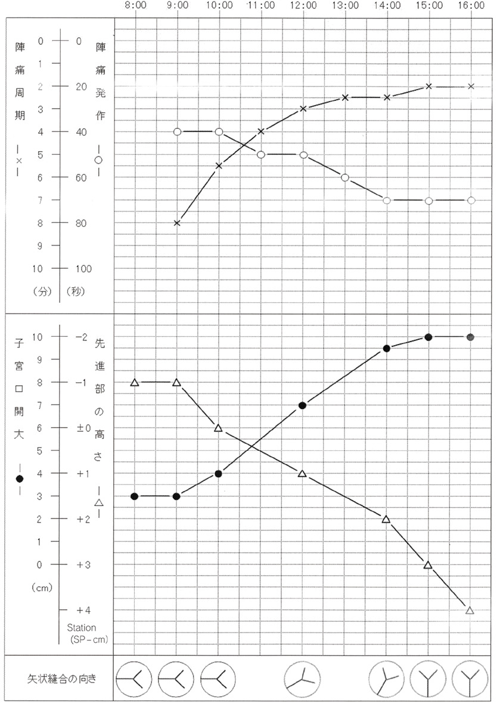
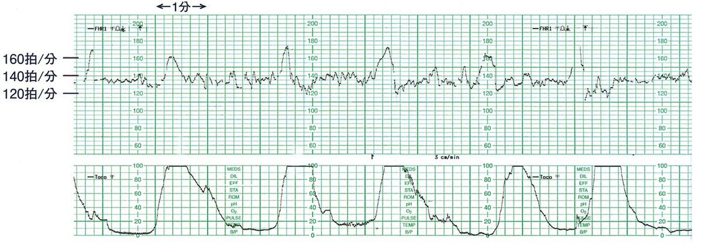
ａ 経過観察
ｂ 鉗子分娩
ｃ 帝王切開
ｄ β2 刺激薬投与
ｅ オキシトシン投与
✅
ａ 経過観察
パルトグラムで分娩が順調に進行し、CTGにも異常がないため、経過観察でよい。
🩺 順調な進行＋正常CTG → 経過観察
実際の図は参照できないが、本問で正解が「経過観察」となる状況＝パルトグラム（A）で子宮口開大・児頭下降が順調に進行し、CTG（B）に胎児機能不全がない。介入（鉗子・帝切・陣痛促進・抑制）を要する所見がなければ経過観察（選択肢a）。羊水混濁もなく緊急性はない。
□ 選択肢の検討
| 選択肢 | 評価 |
|---|---|
| ａ 経過観察 | 正しい。順調な進行・正常CTG |
| ｂ 鉗子分娩 | 不適。全開・低在でなく要件を満たさない |
| ｃ 帝王切開 | 不要。異常所見がない |
| ｄ β2刺激薬投与 | 不適。切迫（過強陣痛）の記載がない |
| ｅ オキシトシン投与 | 不要。有効陣痛で自然進行中 |
Q.357(111E-55)92%
34 歳の初産婦。妊娠38 週5 日に陣痛発来のため入院。午前6 時に10 分周期の痛みを伴う規則的な子宮収縮が始まり、午前6 時30 分に受診。来院時の内診で子宮口4cm 開大、卵膜を触知し、児頭下降度SP ＋1cm、3 時方向に小泉門を触知。Leopold 診察法で児背を母体の左側に触知した。入院後、同日午後4 時に子宮口全開大、午後4 時15 分に自然破水、午後4 時40 分に児頭が発露。午後4 時49 分、児の顔が母体の後方を向く方向から母体の右方を向く方向に回旋しながら児頭が娩出し、午後4 時50 分に全身娩出。CTG に異常なし。児は男児3,360g。頭部に骨重積を認めた。午後5 時に胎盤が自然娩出。分娩時出血量420mL。
この分娩の経過について正しいのはどれか。
この分娩の経過について正しいのはどれか。
ａ 適時破水である。
ｂ 胎位は第2 頭位である。
ｃ 分娩時出血量は異常である。
ｄ 分娩時間は10 時間50 分である。
ｅ 児の右頭頂骨が左頭頂骨の下に入り込んでいる。
✅
ａ 適時破水である。
午前6時（分娩開始）から午後4時50分（児娩出）まで約10時間50分で、分娩時間は10時間50分である。
⏱ 分娩時間の計算
分娩時間＝分娩開始〜児娩出。午前6時（10分周期の規則的陣痛＝分娩開始）〜午後4時50分（児娩出）＝10時間50分（選択肢d）。
誤り：
・破水は子宮口全開大時（午後4時15分）＝適時破水だが選択肢aの「適時破水」は…実際は全開直後で適時破水。ただし本問の主眼は分娩時間
・児背が母体左＝第1胎向（第1頭位）（第2頭位でない）
・出血420mLは正常範囲（500mL以下）
・骨重積は児頭が産道を通る際の生理的な頭蓋骨の重なり
□ 選択肢の検討
| 選択肢 | 評価 |
|---|---|
| ａ 適時破水である | 紛らわしい。全開直後の破水で適時破水だが、本問の正解は分娩時間 |
| ｂ 胎位は第2頭位 | 誤り。児背が母体左＝第1頭位 |
| ｃ 出血量は異常 | 誤り。420mLは正常範囲 |
| ｄ 分娩時間は10時間50分 | 正しい。午前6時〜午後4時50分 |
| ｅ 右頭頂骨が左頭頂骨の下 | 誤り。骨重積の向きの断定はできない |
Q.358(111I-80)3択74%
36 歳の初産婦。妊娠38 週3 日に陣痛発来のため入院。血圧128/68mmHg。児は頭位。内診で子宮口4cm 開大。CTG で5 分周期の子宮収縮を認め、胎児心拍数波形に異常なし。入院4 時間後、陣痛は2 分間隔となった。内診で子宮口9cm 開大、内診時に自然破水した。CTG で基線155/ 分、正常な基線細変動、一過性徐脈を認めない。さらに30 分後に強い子宮収縮があり、胎児心拍数が60/ 分の徐脈となって回復しない。
胎児徐脈の原因として考えられるのはどれか。3 つ選べ。
胎児徐脈の原因として考えられるのはどれか。3 つ選べ。
ａ 臍帯脱出
ｂ 子宮破裂
ｃ 羊水塞栓症
ｄ 絨毛膜羊膜炎
ｅ HELLP 症候群
✅
ａ 臍帯脱出
ｂ 子宮破裂
ｃ 羊水塞栓症
破水直後の強い子宮収縮に続く回復しない高度徐脈は、臍帯脱出・子宮破裂・羊水塞栓症で起こりうる。
🚨 破水後の回復しない高度徐脈
子宮口9cmで内診時破水→直後の強い子宮収縮→回復しない高度徐脈（60/分）という急変。原因として：・臍帯脱出：破水で臍帯が児頭より先進・圧迫され急な徐脈
・子宮破裂：強い子宮収縮・胎児下降で破裂し胎盤循環が破綻
・羊水塞栓症：破水・強収縮を契機に母体循環虚脱→胎児徐脈
の3つが考えられる（選択肢a・b・c）。
□ 選択肢の検討
| 選択肢 | 評価 |
|---|---|
| ａ 臍帯脱出 | 正しい。破水直後に起こる急な徐脈 |
| ｂ 子宮破裂 | 正しい。強収縮で破裂し胎盤循環破綻 |
| ｃ 羊水塞栓症 | 正しい。母体虚脱に伴う胎児徐脈 |
| ｄ 絨毛膜羊膜炎 | 誤り。徐脈でなく発熱・頻脈が主で急な徐脈は非典型 |
| ｅ HELLP症候群 | 誤り。母体の肝・血小板異常で急な徐脈は来さない |
Q.359(110E-28)84%
帝王切開の絶対的適応となるのはどれか。
ａ 骨盤位
ｂ 微弱陣痛
ｃ 不正軸進入
ｄ 軟産道強靱
ｅ 児頭骨盤不均衡
✅
ｅ 児頭骨盤不均衡
児頭骨盤不均衡は経腟分娩が不可能で、帝王切開の絶対的適応である。
🔪 帝王切開の絶対的適応
絶対的適応（経腟分娩が不可能）：児頭骨盤不均衡〈CPD〉・横位・前置胎盤（全前置）・児頭骨盤不均衡など。相対的適応（状況により選択）：骨盤位・微弱陣痛・軟産道強靱・既往帝王切開など。
児頭骨盤不均衡は児頭が骨盤を通れないため経腟分娩できず、絶対的適応（選択肢e）。
□ 選択肢の検討
| 選択肢 | 評価 |
|---|---|
| ａ 骨盤位 | 相対的。条件により経腟分娩も可能 |
| ｂ 微弱陣痛 | 相対的。まず陣痛促進を試みる |
| ｃ 不正軸進入 | 相対的。管理で経腟分娩しうる |
| ｄ 軟産道強靱 | 相対的。 |
| ｅ 児頭骨盤不均衡 | 正しい。絶対的適応 |
Q.360(110F-13)93%
妊娠末期の女性生殖器におけるオキシトシンの作用部位はどれか。
ａ 腟
ｂ 子宮頸部
ｃ 子宮峡部
ｄ 子宮体部
ｅ 卵 管
✅
ｄ 子宮体部
オキシトシンは子宮体部（子宮筋層）に作用して子宮収縮を起こす。
💉 オキシトシンの作用部位
オキシトシンは子宮体部（子宮平滑筋＝子宮筋層）のオキシトシン受容体に作用して子宮収縮を起こす（選択肢d）。オキシトシン受容体は妊娠末期に子宮体部で著増するため、陣痛促進・分娩誘発に用いられる。子宮頸部の熟化は主にプロスタグランジンが担い、乳腺では射乳（乳汁排出）に働く。
□ 選択肢の検討
| 選択肢 | 評価 |
|---|---|
| ａ 腟 | 誤り。作用部位でない |
| ｂ 子宮頸部 | 誤り。熟化はプロスタグランジンが主 |
| ｃ 子宮峡部 | 誤り。主作用は体部 |
| ｄ 子宮体部 | 正しい。子宮筋層を収縮させる |
| ｅ 卵管 | 誤り。分娩時の主作用部位でない |
Q.361(109E-16)96%
陣痛発来とする所見はどれか。
ａ 胎動減少
ｂ 胎児下降
ｃ 血性帯下増加
ｄ 子宮頸管短縮
ｅ 規則的子宮収縮
✅
ｅ 規則的子宮収縮
陣痛発来（分娩開始）は規則的な子宮収縮が10分以内周期になった時点で判断する。
⏱ 陣痛発来の定義
陣痛発来（分娩開始）＝規則的な子宮収縮が10分以内の周期（1時間に6回以上）になった時点（選択肢e）。胎動減少・胎児下降・血性帯下（産徴）・子宮頸管短縮は分娩が近いことを示す前駆症状だが、陣痛発来の定義そのものではない。
□ 選択肢の検討
| 選択肢 | 評価 |
|---|---|
| ａ 胎動減少 | 誤り。陣痛発来の指標でない |
| ｂ 胎児下降 | 誤り。前駆症状 |
| ｃ 血性帯下増加 | 誤り。産徴（前駆症状） |
| ｄ 子宮頸管短縮 | 誤り。前駆的変化 |
| ｅ 規則的子宮収縮 | 正しい。10分以内周期で分娩開始 |
Q.362(109E-23)94%
妊娠41 週で児頭骨盤不均衡を示唆する児頭の所見はどれか。
ａ 応 形
ｂ 嵌 入
ｃ 固 定
ｄ 浮 動
ｅ 骨重積
✅
ｄ 浮 動
妊娠末期なのに児頭が骨盤内に固定せず浮動している（嵌入しない）ことは児頭骨盤不均衡を示唆する。
🩺 CPDを示唆する児頭所見
妊娠41週（末期）では通常、児頭は骨盤内に下降・固定（嵌入）する。それにもかかわらず児頭が骨盤入口に入らず浮動している（浮動＝floating）のは、児頭が骨盤を通れない＝児頭骨盤不均衡〈CPD〉を示唆する（選択肢d）。
応形（molding＝骨重積による頭の変形）・嵌入・固定・骨重積はいずれも児頭が骨盤に適合・下降している所見で、CPDを示唆しない。
□ 選択肢の検討
| 選択肢 | 評価 |
|---|---|
| ａ 応形 | 誤り。産道通過に伴う頭の変形 |
| ｂ 嵌入 | 誤り。児頭が骨盤入口を通過（適合） |
| ｃ 固定 | 誤り。骨盤内に固定＝下降している |
| ｄ 浮動 | 正しい。末期に嵌入しない＝CPD示唆 |
| ｅ 骨重積 | 誤り。産道通過時の生理的変化 |
Q.363(109G-47)83%
25 歳の初産婦。妊娠39 週6 日。陣痛発来のため入院。陣痛は周期2 分30 秒、発作持続時間70 秒。外診では第1 頭位。内診で子宮口7cm 開大、展退度80％、児頭下降度SP ＋3cm、子宮頸部は軟、子宮口の位置は前方。胎胞は認めない。卵膜を介して矢状縫合を1 時から7 時方向に触知し、子宮口の中央部に小泉門を触れるが大泉門は触れない。
正しいのはどれか。
正しいのはどれか。
ａ 破水している。
ｂ 反屈位である。
ｃ 過強陣痛である。
ｄ 分娩第2 期である。
ｅ 児頭は嵌入している。
✅
ｅ 児頭は嵌入している。
児頭下降度SP+3で坐骨棘を越えて下降しており、児頭は嵌入している。
🩺 児頭の嵌入
児頭下降度SP+3＝坐骨棘（SP±0）を越えて深く下降しており、児頭は嵌入している（児頭最大周囲径が骨盤入口を通過済み）（選択肢e）。誤り：
・「卵膜を触知」＝未破水（破水していない）
・小泉門を触れ大泉門を触れない＝屈曲良好で反屈位でない
・陣痛周期2分30秒は正常範囲（過強陣痛は周期2分未満の目安）
・子宮口7cmで未全開＝分娩第1期（第2期でない）
□ 骨盤の面と下降度
児頭下降度〈station〉は坐骨棘〈SP〉を基準（0）とし、これより上をマイナス、下をプラスで表す。・骨盤入口部：SP約−3〜−4（岬角・恥骨結合上縁の高さ）
・骨盤闊部：SP約−2〜−1（最も広い）
・骨盤峡部：SP±0（坐骨棘の高さ＝最も狭い）
・骨盤出口部：SP約+2〜+3
児頭が嵌入（engagement）＝児頭最大周囲径が骨盤入口を通過＝SP±0（坐骨棘）到達が目安。
□ 選択肢の検討
| 選択肢 | 評価 |
|---|---|
| ａ 破水している | 誤り。卵膜を触知＝未破水 |
| ｂ 反屈位である | 誤り。小泉門先進で屈曲良好 |
| ｃ 過強陣痛である | 誤り。周期2分30秒は正常範囲 |
| ｄ 分娩第2期である | 誤り。子宮口7cmで未全開＝第1期 |
| ｅ 児頭は嵌入している | 正しい。SP+3で坐骨棘を越えて下降 |
Q.364(108B-22)58%
正常に経過している分娩第1 期の内診で触れないのはどれか。
ａ 岬 角
ｂ 尾 骨
ｃ 坐骨棘
ｄ 小泉門
ｅ 矢状縫合
✅
ａ 岬 角
岬角は正常骨盤では内診で触れず、触れれば狭骨盤（CPD）を示唆する。
🖐 内診で触れないもの＝岬角
Q353と同型。岬角（仙骨岬）は正常骨盤では届かず触れない。内診で岬角に届く＝対角結合線が短い＝狭骨盤・児頭骨盤不均衡を示唆する（選択肢a）。尾骨・坐骨棘・小泉門・矢状縫合は正常分娩で触知できる。
□ 選択肢の検討
| 選択肢 | 評価 |
|---|---|
| ａ 岬角 | 正しい（触れない）。触れれば狭骨盤を示唆 |
| ｂ 尾骨 | 触れる |
| ｃ 坐骨棘 | 触れる。下降度の基準 |
| ｄ 小泉門 | 触れる。頭位の先進部 |
| ｅ 矢状縫合 | 触れる。回旋の判定 |
Q.365(108E-43)43%
30 歳の1 回経妊1 回経産婦。妊娠41 週5 日。午前6 時に陣痛発来し午前8 時に入院。入院直後の内診で子宮口3cm 開大、卵膜を触知し、児頭下降度SP －1cm、同時のCTG に異常なし。午前10 時に自然破水。午後7 時に子宮口全開大し、午後9 時50 分に3,805g の男児を経腟分娩。羊水混濁なし。Apgar スコア8 点（1 分）、8 点（5 分）。午後10 時10 分に胎盤が自然娩出し、出血量500ml。
この分娩に関して正しいのはどれか。
この分娩に関して正しいのはどれか。
ａ 過期産である。
ｂ 前期破水である。
ｃ 第2 期遷延である。
ｄ 巨大児である。
ｅ 新生児仮死である。
✅
ｃ 第2 期遷延である。
子宮口全開大（午後7時）から児娩出（午後9時50分）まで約2時間50分かかっており、分娩第2期遷延である。
⏱ 分娩第2期遷延
分娩第2期＝全開大〜児娩出。午後7時全開大〜午後9時50分児娩出＝2時間50分で、初産の目安（2時間）／経産の目安（1時間）を超え第2期遷延（選択肢c）。本例は経産婦なので特に遷延が明らか。誤り：
・妊娠41週5日は過期産（42週0日以降）には至らない（過期妊娠は42週以降）
・破水は分娩開始後・全開前（午前10時）＝早期破水（前期破水でない）
・3,805gは巨大児（4,000g以上）に至らない
・Apgar 8点は新生児仮死でない
□ 選択肢の検討
| 選択肢 | 評価 |
|---|---|
| ａ 過期産である | 誤り。42週未満で過期産でない |
| ｂ 前期破水である | 誤り。分娩開始後の早期破水 |
| ｃ 第2期遷延である | 正しい。全開大〜娩出が2時間50分 |
| ｄ 巨大児である | 誤り。3,805gで4,000g未満 |
| ｅ 新生児仮死である | 誤り。Apgar 8点で仮死でない |
Q.366(108E-52)93%
33 歳の1 回経妊1 回経産婦。妊娠36 週。帝王切開術前の検査のため来院した。2 週後の妊娠38 週に選択的帝王切開術を予定している。これまでの妊婦健康診査では異常は認められなかった。第1 子は妊娠39 週で分娩停止のため帝王切開術で出生した。体温36.8℃。脈拍72/ 分、整。血圧120/70mmHg。内診で子宮口は閉鎖、Bishop スコアは2 点である。両下腿に浮腫を認める。尿所見：蛋白（－）、糖（－）。赤血球386 万、Hb 11.4g/dl、Ht 34％、白血球11,000（桿状核好中球17％、分葉核好中球50％、好酸球1％、好塩基球1％、単球6％、リンパ球25％）、血小板21 万、PT 10.0 秒（基準10 ～14）、APTT 28.4 秒（基準対照32.2）。総蛋白6.8g/dl、アルブミン4.8g/dl、総ビリルビン0.6mg/dl、直接ビリルビン0.3mg/dl、AST 28IU/l、ALT 18IU/l、LD 270IU/l（基準176 ～353）、ALP 350IU/l（基準115 ～359）、γ-GTP 36IU/l（基準8 ～50）、CK 60IU/l（基準30 ～140）、尿素窒素9mg/dl、クレアチニン0.6mg/dl、尿酸3.5mg/dl、血糖80mg/dl、総コレステロール280mg/dl、トリグリセリド190mg/dl。心電図と胸部エックス線写真とに異常を認めない。腹部超音波検査で胎児発育は週数相当である。胎児心拍数陣痛図に異常を認めない。
現時点での対応として適切なのはどれか。
現時点での対応として適切なのはどれか。
ａ 経過観察
ｂ 鉄剤投与
ｃ 抗菌薬投与
ｄ 利尿薬投与
ｅ HMG-CoA 還元酵素阻害薬投与
✅
ａ 経過観察
既往帝王切開の待機的帝王切開予定で、検査所見に異常はなく（下腿浮腫や軽度の値は生理的範囲）、経過観察でよい。
🩺 予定帝王切開前の評価
既往帝王切開（第1子が分娩停止で帝切）で妊娠38週に選択的帝王切開を予定。現時点の所見に治療を要する異常はない：・両下腿浮腫・Hb 11.4（妊娠性の生理的希釈）・白血球11,000（妊娠で生理的増加）はいずれも妊娠に伴う生理的範囲
・血圧・尿・肝機能・血糖・心電図・胸部Xp・胎児いずれも正常
したがって特別な介入は不要で経過観察（予定どおり38週の帝切へ、選択肢a）。
□ 選択肢の検討
| 選択肢 | 評価 |
|---|---|
| ａ 経過観察 | 正しい。異常なく予定帝切まで経過観察 |
| ｂ 鉄剤投与 | 不要。Hb 11.4は妊娠性の生理的範囲 |
| ｃ 抗菌薬投与 | 不要。感染徴候がない |
| ｄ 利尿薬投与 | 不要。生理的浮腫で利尿薬は不適 |
| ｅ スタチン投与 | 禁忌。妊娠中は禁忌、かつ適応がない |
Q.367(107B-18)88%
分娩中の異常とその対応の組合せで正しいのはどれか。
ａ 横 位 ─────────── 帝王切開
ｂ 骨盤位 ─────────── 吸引分娩
ｃ 肩甲難産 ────────── 鉗子分娩
ｄ 低在横定位 ───────── 会陰切開
ｅ 不正軸進入 ───────── 陣痛促進
✅
ａ 横 位 ─────────── 帝王切開
横位は経腟分娩が不可能で帝王切開が適応となり、正しい組合せ。
🩺 分娩中の異常と対応
・横位 → 帝王切開（経腟分娩不可能）：正しい誤り：
・骨盤位 → 吸引分娩は不可（吸引は頭位のみ）。骨盤位牽出術／帝王切開
・肩甲難産 → 鉗子でなくMcRoberts体位・恥骨上圧迫等の解除手技
・低在横定位 → 会陰切開でなく回旋の是正（用手回旋・吸引・鉗子）
・不正軸進入 → 陣痛促進でなく体位変換など
□ 選択肢の検討
| 選択肢 | 評価 |
|---|---|
| ａ 横位 ─ 帝王切開 | 正しい。経腟分娩不可能 |
| ｂ 骨盤位 ─ 吸引分娩 | 誤り。吸引は頭位のみ |
| ｃ 肩甲難産 ─ 鉗子分娩 | 誤り。解除手技で対応 |
| ｄ 低在横定位 ─ 会陰切開 | 誤り。回旋の是正が必要 |
| ｅ 不正軸進入 ─ 陣痛促進 | 誤り。促進では解決しない |
Q.368(107B-24)96%
内診で診断できる臍帯異常はどれか。
ａ 巻 絡
ｂ 脱 出
ｃ 過捻転
ｄ 真結節
ｅ 卵膜付着
✅
ｂ 脱 出
臍帯脱出は破水後に臍帯が先進部より下がり、内診で拍動する臍帯を触知して診断できる。
🩺 内診で診断できる臍帯異常＝脱出
臍帯脱出は、破水後に臍帯が児先進部より腟内に下垂し、内診で拍動する索状物（臍帯）を触知して診断できる（選択肢b）。緊急に児を挙上し帝王切開を行う。巻絡・過捻転・真結節・卵膜（辺縁）付着は超音波や分娩後の胎盤・臍帯の観察で分かるもので、分娩前の内診では診断できない。
□ 選択肢の検討
| 選択肢 | 評価 |
|---|---|
| ａ 巻絡 | 誤り。超音波で疑う（内診で確定できない） |
| ｂ 脱出 | 正しい。内診で拍動する臍帯を触知 |
| ｃ 過捻転 | 誤り。分娩後の臍帯観察で判明 |
| ｄ 真結節 | 誤り。分娩後に確認 |
| ｅ 卵膜付着 | 誤り。超音波・胎盤観察で判明 |
Q.369(107G-36)2択57%
児頭の固定を妨げるのはどれか。2 つ選べ。
ａ 狭骨盤
ｂ 過長臍帯
ｃ 頸部筋腫
ｄ 前置血管
ｅ 羊水過少症
✅
ａ 狭骨盤
ｃ 頸部筋腫
狭骨盤（骨産道の狭小）と頸部筋腫（軟産道の占拠）は児頭の骨盤内固定（嵌入）を妨げる。
🩺 児頭固定を妨げる因子
児頭の固定（嵌入）を妨げるのは、産道（骨産道・軟産道）が狭い・塞がれること：・狭骨盤：骨産道が狭く児頭が入口を通れない
・頸部（子宮頸部）筋腫：軟産道を占拠し児頭下降を妨げる
の2つ（選択肢a・c）。
過長臍帯・前置血管・羊水過少は児頭固定を直接妨げる因子ではない。
□ 選択肢の検討
| 選択肢 | 評価 |
|---|---|
| ａ 狭骨盤 | 正しい。骨産道の狭小で嵌入を妨げる |
| ｂ 過長臍帯 | 誤り。固定を直接妨げない（臍帯脱出・巻絡の素因） |
| ｃ 頸部筋腫 | 正しい。軟産道を占拠し下降を妨げる |
| ｄ 前置血管 | 誤り。破水時出血のリスクだが固定は妨げない |
| ｅ 羊水過少症 | 誤り。児頭固定を直接妨げない |
Q.370(106A-55)📷 画像2択73%
生後6 日の男児。頭部の腫瘤を主訴に新生児搬送された。在胎39 週2 日、3,120g で頭位自然分娩で出生した。仮死はなかった。出生直後に頭部の腫瘤を認めていた。腫瘤は増大傾向にあり、黄疸と貧血とが出現して次第に増悪してきたため転院した。意識は清明。身長51.0cm、体重3,080g。両側の頭頂側頭部に径5cm の軟らかい腫瘤を触知する。大泉門の膨隆を認めない。心音と呼吸音とに異常を認めない。腹部は平坦、軟で、肝・脾を触知しない。赤血球233 万、Hb 8.7g/dl、Ht 23％、白血球28,400、血小板28 万、出血時間正常、PT 11 秒（基準10 ～14）、APTT 70 秒（基準対照27 ～40）、フィブリノゲン322mg/dl（基準130 ～380）。総ビリルビン16.2mg/dl、直接ビリルビン0.1mg/dl、AST 45IU/l、ALT 12IU/l、LD 700IU/l（基準335 ～666）。入院時の頭部単純CT 冠状断像を示す。
確定診断に必要な検査項目はどれか。2 つ選べ。
確定診断に必要な検査項目はどれか。2 つ選べ。
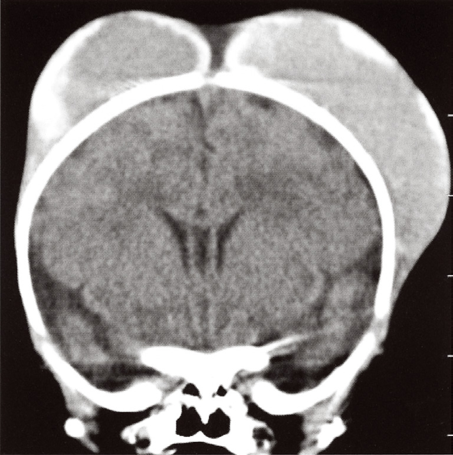
ａ 第Ⅶ因子活性
ｂ 第Ⅷ因子活性
ｃ 第Ⅸ因子活性
ｄ 第XⅢ因子活性
ｅ von Willebrand 因子活性
✅
ｂ 第Ⅷ因子活性
ｃ 第Ⅸ因子活性
進行する頭部腫瘤（帽状腱膜下血腫）＋APTT延長・PT正常から血友病を疑い、第Ⅷ因子・第Ⅸ因子活性を測定する。
🩸 APTT単独延長＝血友病を疑う
広範な帽状腱膜下血腫（両側頭頂側頭部の軟らかい腫瘤・増大・貧血・黄疸）にAPTT延長・PT正常・血小板正常・出血時間正常を伴う。この凝固パターンは内因系の凝固因子欠乏＝血友病を示す。確定には第Ⅷ因子活性（血友病A）と第Ⅸ因子活性（血友病B）を測定する（選択肢b・c）。
第Ⅶ因子は外因系（PT延長）、第XⅢ因子は通常のPT/APTTで正常、vWFは出血時間延長を伴う点で異なる。
□ 選択肢の検討
| 選択肢 | 評価 |
|---|---|
| ａ 第Ⅶ因子活性 | 誤り。外因系（PT延長）で本例はPT正常 |
| ｂ 第Ⅷ因子活性 | 正しい。血友病Aの確定 |
| ｃ 第Ⅸ因子活性 | 正しい。血友病Bの確定 |
| ｄ 第XⅢ因子活性 | 誤り。PT/APTT正常でも出血する型で本例のAPTT延長を説明しない |
| ｅ von Willebrand因子活性 | 誤り。通常は出血時間延長を伴う |
Q.371(106E-5)📷 画像84%
妊娠38 週である妊婦の腹部の模式図を示す。
胎児が第1 頭位の場合に、胎児心拍を聴取する部位（●）で正しいのはどれか。
胎児が第1 頭位の場合に、胎児心拍を聴取する部位（●）で正しいのはどれか。
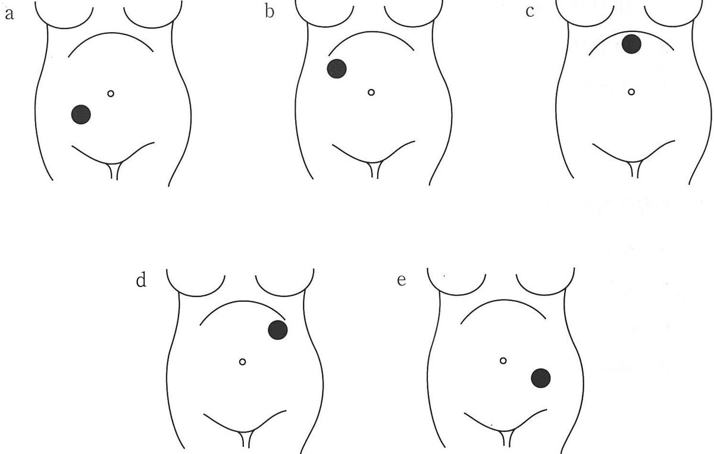
ａ 母体右下腹部（臍の右下）
ｂ 母体右上腹部（臍の右上）
ｃ 上腹部正中（臍の上方・子宮底部付近）
ｄ 母体左上腹部（臍の左上）
ｅ 母体左下腹部（臍の左下）
✅
ｅ 母体左下腹部（臍の左下）
第1頭位（児背が母体左・頭位）では胎児心拍は母体の左下腹部で最強に聴取される。
🔊 胎児心拍の最良聴取部位
胎児心拍は児背（肩甲部）越しに最も強く聴取される。・頭位：児背は下方 → 臍より下（下腹部）で聴取
・骨盤位：児背は上方 → 臍より上（上腹部）で聴取
・第1胎向（児背が母体左） → 母体の左側で聴取
・第2胎向（児背が母体右）→ 母体の右側で聴取
第1頭位＝児背左・頭位 → 母体左下腹部で聴取（選択肢e）。
（模式図は母体を正面から見ており、画面の左右は母体の左右と反転する。○＝臍。）
□ 選択肢の検討
| 選択肢 | 評価 |
|---|---|
| ａ 母体右下腹部 | 誤り。頭位だが児背が右＝第2頭位の聴取部位 |
| ｂ 母体右上腹部 | 誤り。骨盤位かつ第2胎向に相当 |
| ｃ 上腹部正中 | 誤り。子宮底付近で頭位の聴取部位でない |
| ｄ 母体左上腹部 | 誤り。児背左だが上腹部＝骨盤位の聴取部位 |
| ｅ 母体左下腹部 | 正しい。第1頭位（児背左・頭位）の聴取部位 |
Q.372(106G-43)97%
28 歳の1 回経妊1 回経産婦。妊娠38 週。2 時間前に水様帯下があり来院。第1 子は自然経腟分娩。来院後、3 分間隔の規則的な陣痛が発来。内診で子宮口4cm 開大、児頭下降度SP ± 0。先進部は小泉門で2 時の位置に触れ、矢状縫合を2 時から8 時にかけて認める。
児頭の回旋時期の判断で正しいのはどれか。
児頭の回旋時期の判断で正しいのはどれか。
ａ 第1 回旋の直後
ｂ 第2 回旋の途上
ｃ 第2 回旋の直後
ｄ 第3 回旋の途上
ｅ 第3 回旋の直後
✅
ｂ 第2 回旋の途上
矢状縫合が斜径（2時〜8時）で小泉門が前方寄りに回旋しつつある段階で、第2回旋（内回旋）の途上である。
🔄 回旋時期の判定
矢状縫合が2時〜8時（斜径）に位置し、小泉門が2時（前方寄り）方向。骨盤入口では矢状縫合は横径（3時〜9時）で、内回旋が完了すると縦径（12時〜6時）になる。
本例は横径と縦径の中間（斜径）で小泉門が前方へ回りつつある＝第2回旋（内回旋）の途上（選択肢b）。
□ 児頭の回旋
| 回旋 | 別名 | 内容 | 異常 |
|---|---|---|---|
| 第1回旋 | 屈曲 | 児頭が屈曲し小泉門が先進 | 反屈位（前頭位・額位・顔位） |
| 第2回旋 | 内回旋 | 矢状縫合が横径→縦径、後頭が前方へ | 後方後頭位・低在横定位 |
| 第3回旋 | 伸展 | 恥骨結合を支点に伸展して娩出。顔は母体背側を向く | — |
| 第4回旋 | 外回旋 | 娩出した児頭が肩甲の内回旋に伴い横を向く | — |
□ 選択肢の検討
| 選択肢 | 評価 |
|---|---|
| ａ 第1回旋の直後 | 誤り。屈曲は済み内回旋に入っている |
| ｂ 第2回旋の途上 | 正しい。矢状縫合が斜径で内回旋中 |
| ｃ 第2回旋の直後 | 誤り。完了なら矢状縫合は縦径（12-6時） |
| ｄ 第3回旋の途上 | 誤り。伸展（娩出）はまだ先 |
| ｅ 第3回旋の直後 | 誤り。娩出段階でない |
Q.373(106I-39)2択15%
頭位分娩時に新生児が損傷を受けやすいのはどれか。2 つ選べ。
ａ 三叉神経
ｂ 腕神経叢
ｃ 迷走神経
ｄ 横隔神経
ｅ 坐骨神経
✅
ｂ 腕神経叢
ｄ 横隔神経
肩甲難産では腕神経叢麻痺（Erb麻痺）と、横隔神経麻痺（C3〜5由来）を起こしやすい。
🩺 分娩損傷を受けやすい神経
頭位分娩（特に肩甲難産）で牽引・伸展を受けやすいのは頸部〜肩の神経：・腕神経叢（C5〜Th1）：Erb麻痺（上位型）・Klumpke麻痺（下位型）
・横隔神経（C3〜5）：腕神経叢に近く同時損傷で横隔膜麻痺を来す
の2つ（選択肢b・d）。
三叉神経・迷走神経・坐骨神経は分娩による損傷を受けにくい。
□ 選択肢の検討
| 選択肢 | 評価 |
|---|---|
| ａ 三叉神経 | 誤り。分娩損傷を受けにくい |
| ｂ 腕神経叢 | 正しい。肩甲難産でErb/Klumpke麻痺 |
| ｃ 迷走神経 | 誤り。 |
| ｄ 横隔神経 | 正しい。C3〜5で腕神経叢と近接 |
| ｅ 坐骨神経 | 誤り。 |
Q.374(105B-29)2択93%
胎位と回旋異常の組合せで正しいのはどれか。2 つ選べ。
ａ 顔 位 ─────────── 第1 回旋
ｂ 骨盤位 ─────────── 第2 回旋
ｃ 後方後頭位 ───────── 第2 回旋
ｄ 低在横定位 ───────── 第3 回旋
ｅ 反屈位 ─────────── 第4 回旋
✅
ａ 顔 位 ─────────── 第1 回旋
ｃ 後方後頭位 ───────── 第2 回旋
顔位は第1回旋（屈曲）の異常、後方後頭位は第2回旋（内回旋）の異常であり、正しい組合せ。
🔄 回旋異常の対応
・顔位 → 第1回旋（屈曲）の異常（強い反屈で顎が先進）：正しい・後方後頭位 → 第2回旋（内回旋）の異常（後頭が後方へ回旋）：正しい
誤り：
・骨盤位は胎位異常（回旋異常ではない）
・低在横定位は第2回旋の異常（第3回旋でない）
・反屈位は第1回旋の異常（第4回旋でない）
□ 選択肢の検討
| 選択肢 | 評価 |
|---|---|
| ａ 顔位 ─ 第1回旋 | 正しい。屈曲の異常（反屈） |
| ｂ 骨盤位 ─ 第2回旋 | 誤り。骨盤位は胎位異常 |
| ｃ 後方後頭位 ─ 第2回旋 | 正しい。内回旋の異常 |
| ｄ 低在横定位 ─ 第3回旋 | 誤り。第2回旋の異常 |
| ｅ 反屈位 ─ 第4回旋 | 誤り。第1回旋の異常 |
Q.375(105D-17)2択90%
周産期異常と発症時期の組合せで正しいのはどれか。2 つ選べ。
ａ 微弱陣痛 ────────── 分娩第1 期
ｂ 肩甲難産 ────────── 分娩第2 期
ｃ 弛緩出血 ────────── 分娩第2 期
ｄ 臍帯脱出 ────────── 分娩第3 期
ｅ 常位胎盤早期剝離 ────── 分娩第3 期
✅
ａ 微弱陣痛 ────────── 分娩第1 期
ｂ 肩甲難産 ────────── 分娩第2 期
微弱陣痛は分娩第1期、肩甲難産は分娩第2期（児頭娩出後の肩甲通過時）に問題となる。
⏱ 周産期異常の発症時期
・微弱陣痛 → 分娩第1期（開口期に有効陣痛が得られず開大が進まない）：正しい・肩甲難産 → 分娩第2期（児頭娩出後に肩甲が恥骨に引っかかる）：正しい
誤り：
・弛緩出血 → 分娩第3期以降（胎盤娩出後）の子宮収縮不良による出血
・臍帯脱出 → 破水時（第1〜2期）
・常位胎盤早期剝離 → 妊娠中〜分娩期（第3期特有ではない）
□ 分娩の各期
分娩第1期：分娩開始（10分以内周期の規則的陣痛）〜子宮口全開大分娩第2期：子宮口全開大〜児娩出（初産1〜2時間、経産60分以下）
分娩第3期：児娩出〜胎盤娩出（15〜30分）
分娩時出血量の正常上限は約500mL（経腟）。
□ 選択肢の検討
| 選択肢 | 評価 |
|---|---|
| ａ 微弱陣痛 ─ 分娩第1期 | 正しい。開口期の陣痛異常 |
| ｂ 肩甲難産 ─ 分娩第2期 | 正しい。児頭娩出後の肩甲通過 |
| ｃ 弛緩出血 ─ 分娩第2期 | 誤り。第3期以降（胎盤娩出後） |
| ｄ 臍帯脱出 ─ 分娩第3期 | 誤り。破水時（第1〜2期） |
| ｅ 常位胎盤早期剝離 ─ 分娩第3期 | 誤り。妊娠中〜分娩期に起こる |
Q.376(105E-15)48%
陣痛が有効と判断できるのはどれか。
ａ 内診所見の進行
ｂ 陣痛周期が5 分以内
ｃ 血性粘液性帯下の出現
ｄ 子宮収縮ごとの疼痛の訴え
ｅ 陣痛発作持続時間が1 分以上
✅
ａ 内診所見の進行
陣痛が有効かどうかは、内診所見（子宮口開大・児頭下降）が進行しているかで判断する。
🩺 有効陣痛の判定
陣痛が有効＝分娩が進行していること。すなわち内診所見（子宮口開大・展退・児頭下降）が時間とともに進行すれば有効陣痛と判断する（選択肢a）。陣痛周期・持続時間・疼痛の訴え・産徴（血性帯下）はいずれも「陣痛が有効に分娩を進めているか」を直接示すものではない（周期が短くても分娩が進まない微弱陣痛もある）。
□ 選択肢の検討
| 選択肢 | 評価 |
|---|---|
| ａ 内診所見の進行 | 正しい。開大・下降の進行が有効陣痛の証拠 |
| ｂ 陣痛周期が5分以内 | 誤り。周期だけでは有効性を判断できない |
| ｃ 血性粘液性帯下の出現 | 誤り。産徴で有効性の指標でない |
| ｄ 子宮収縮ごとの疼痛の訴え | 誤り。主観的で分娩進行を示さない |
| ｅ 発作持続時間が1分以上 | 誤り。持続時間だけでは判断できない |
Q.377(104B-14)86%
Leopold 診察法の結果を示す。
第1 段：胎児頭部を触れる。
第2 段：胎児の背部を母体の右側に触れる。
第3、4 段：胎児下向部は骨盤内に進入している。
この児の胎位・胎向はどれか。
第1 段：胎児頭部を触れる。
第2 段：胎児の背部を母体の右側に触れる。
第3、4 段：胎児下向部は骨盤内に進入している。
この児の胎位・胎向はどれか。
ａ 頭位第1 胎向
ｂ 頭位第2 胎向
ｃ 骨盤位第1 胎向
ｄ 骨盤位第2 胎向
ｅ 横 位
✅
ｄ 骨盤位第2 胎向
第1段（子宮底）で頭部＝頭が上の骨盤位、第2段で児背が母体右＝第2胎向であり、骨盤位第2胎向。
🖐 Leopold触診による胎位・胎向
・第1段（子宮底）で胎児頭部を触れる＝頭が上＝骨盤位・第2段で児背が母体の右側＝第2胎向
・第3・4段で下向部（＝殿部）が骨盤内へ進入
よって骨盤位第2胎向（選択肢d）。
（胎向は児背の向きで決まる：児背が母体左＝第1胎向、母体右＝第2胎向。）
□ 選択肢の検討
| 選択肢 | 評価 |
|---|---|
| ａ 頭位第1胎向 | 誤り。子宮底に頭部＝骨盤位（頭位でない） |
| ｂ 頭位第2胎向 | 誤り。同上、骨盤位 |
| ｃ 骨盤位第1胎向 | 誤り。児背は母体右＝第2胎向 |
| ｄ 骨盤位第2胎向 | 正しい。頭が上・児背右 |
| ｅ 横位 | 誤り。下向部が骨盤内進入で縦位 |
Q.378(104E-42)89%
28 歳の初産婦。妊娠39 週4 日。陣痛発来のため入院。入院時の外診では第1 頭位。内診で子宮口7cm 開大、展退度80％、児頭の下降度SP ＋3cm、子宮頸部は軟、子宮口の位置は前方。緊満した胎胞を認め、卵膜を介して矢状縫合を1 時から7 時方向に触知する。子宮口の中央部に小泉門を触れるが、大泉門は触れない。
正しいのはどれか。
正しいのはどれか。
ａ 破水している。
ｂ 反屈位である。
ｃ 後方後頭位である。
ｄ 分娩第2 期である。
ｅ 児頭は陥入している。
✅
ｅ 児頭は陥入している。
児頭下降度SP+3で坐骨棘を越えて下降しており、児頭は陥入（嵌入）している。
🩺 児頭の陥入（嵌入）
Q363とほぼ同型。児頭下降度SP+3＝坐骨棘（SP±0）を越えて下降＝陥入（嵌入）済み（選択肢e）。誤り：
・「緊満した胎胞・卵膜を触知」＝未破水
・小泉門を触れ大泉門を触れない＝屈曲良好（反屈位でない）
・矢状縫合1時〜7時（斜径）で小泉門前方寄り＝後方後頭位でない
・子宮口7cmで未全開＝分娩第1期（第2期でない）
□ 選択肢の検討
| 選択肢 | 評価 |
|---|---|
| ａ 破水している | 誤り。緊満胎胞・卵膜触知＝未破水 |
| ｂ 反屈位である | 誤り。小泉門先進で屈曲良好 |
| ｃ 後方後頭位である | 誤り。小泉門は前方寄り |
| ｄ 分娩第2期である | 誤り。子宮口7cmで第1期 |
| ｅ 児頭は陥入している | 正しい。SP+3で坐骨棘を越えて下降 |
Q.379(104E-46)84%
23 歳の女性。妊娠38 週6 日。陣痛を主訴に来院。内診で子宮口は5cm 開大しており、児頭矢状縫合は骨盤濶部にある。胎児の大泉門は8 時方向に、小泉門は2 時方向に触知する。
現在の状態はどれか。
現在の状態はどれか。
ａ 第1 回旋前
ｂ 第1 回旋
ｃ 第2 回旋
ｄ 第3 回旋
ｅ 第4 回旋
✅
ｃ 第2 回旋
矢状縫合が斜径（2時〜8時）で小泉門が前方へ回旋しつつあり、第2回旋（内回旋）の最中である。
🔄 回旋時期の判定
大泉門8時・小泉門2時＝矢状縫合が斜径（2時〜8時）に位置し、小泉門（後頭）が前方（2時＝12時寄り）へ回旋しつつある。骨盤入口の横径から縦径へ回る途中＝第2回旋（内回旋）の最中（選択肢c）。小泉門が先進しており屈曲（第1回旋）は完了している。
□ 児頭の回旋
| 回旋 | 別名 | 内容 | 異常 |
|---|---|---|---|
| 第1回旋 | 屈曲 | 児頭が屈曲し小泉門が先進 | 反屈位（前頭位・額位・顔位） |
| 第2回旋 | 内回旋 | 矢状縫合が横径→縦径、後頭が前方へ | 後方後頭位・低在横定位 |
| 第3回旋 | 伸展 | 恥骨結合を支点に伸展して娩出。顔は母体背側を向く | — |
| 第4回旋 | 外回旋 | 娩出した児頭が肩甲の内回旋に伴い横を向く | — |
□ 選択肢の検討
| 選択肢 | 評価 |
|---|---|
| ａ 第1回旋前 | 誤り。小泉門先進で屈曲済み |
| ｂ 第1回旋 | 誤り。屈曲は完了している |
| ｃ 第2回旋 | 正しい。矢状縫合が斜径で内回旋中 |
| ｄ 第3回旋 | 誤り。伸展（娩出）はまだ |
| ｅ 第4回旋 | 誤り。外回旋は娩出後 |
Q.380(104G-29)53%
展退について正しいのはどれか。
ａ 外子宮口から進行する。
ｂ 破水すると進行しにくい。
ｃ 経腟超音波検査で診断する。
ｄ 100％なら子宮口は全開大している。
ｅ 子宮頸管の短縮度として表現される。
✅
ｅ 子宮頸管の短縮度として表現される。
展退は子宮頸管の短縮度（%）として表現される。
🩺 子宮頸管の展退
展退〈展退度〉＝子宮頸管が短縮・消失していく度合いを％で表す（選択肢e）。0％（頸管が完全に残る）〜100％（頸管が完全に消失）。誤り：
・展退は内子宮口側から進行する（外子宮口からではない）
・破水の有無で展退が進みにくくなるわけではない
・展退は内診で評価（経腟超音波での頸管長は別指標）
・展退100％でも子宮口が全開大とは限らない（開大と展退は別項目）
□ 選択肢の検討
| 選択肢 | 評価 |
|---|---|
| ａ 外子宮口から進行する | 誤り。内子宮口側から進行 |
| ｂ 破水すると進行しにくい | 誤り。関係しない |
| ｃ 経腟超音波で診断する | 誤り。内診で評価 |
| ｄ 100%なら子宮口は全開大 | 誤り。展退と開大は別項目 |
| ｅ 子宮頸管の短縮度として表現される | 正しい |
Q.381(104H-11)複数正解93%
母体・胎児評価とその方法の組合せで正しいのはどれか。
ａ 軟産道 ─────────── 骨盤外計測法
ｂ 骨産道 ─────────── 超音波検査
ｃ 陣痛周期 ────────── 内 診
ｄ 胎児心拍 ────────── ドプラ〈Doppler〉法
ｅ 胎位・胎向 ───────── パルトグラム（→ 92C-9参照）
✅
ｄ 胎児心拍 ────────── ドプラ〈Doppler〉法
ｅ 胎位・胎向 ───────── パルトグラム（→ 92C-9参照）
胎児心拍はドプラ法で、胎位・胎向はパルトグラム（に回旋・胎向を記録）で評価でき、いずれも正しい（複数正解）。
🩺 母体・胎児評価とその方法
本問は複数の選択肢を正解とする（dまたはe）。・胎児心拍 → ドプラ〈Doppler〉法：超音波ドプラで胎児心拍を聴取・計測：正しい
・胎位・胎向 → パルトグラム：分娩経過とともに児頭の回旋・胎向を記録：正しい
誤り：
・軟産道は内診で評価（骨盤外計測法は骨産道の外計測）
・骨産道は骨盤計測（X線・内診）で評価（超音波でない）
・陣痛周期は触診・CTGで評価（内診でない）
□ 選択肢の検討
| 選択肢 | 評価 |
|---|---|
| ａ 軟産道 ─ 骨盤外計測法 | 誤り。骨盤外計測は骨産道の評価 |
| ｂ 骨産道 ─ 超音波検査 | 誤り。骨盤計測（X線・内診）で評価 |
| ｃ 陣痛周期 ─ 内診 | 誤り。触診・CTGで評価 |
| ｄ 胎児心拍 ─ ドプラ法 | 正しい。超音波ドプラで聴取 |
| ｅ 胎位・胎向 ─ パルトグラム | 正しい。回旋・胎向を記録 |
Q.382(103E-13)92%
正しいのはどれか。
ａ 子宮頸部の展退度は最大で50％である。
ｂ Bishop スコアの最高点は10 点である。
ｃ 坐骨棘は胎児下降度の基準となる。
ｄ 頸管が約10 cm 開大すれば分娩第2 期は終了する。
ｅ Apgar スコアは児の成熟度を示す。
✅
ｃ 坐骨棘は胎児下降度の基準となる。
坐骨棘は児頭下降度（station）の基準（SP±0）となる。
🩺 分娩の基本事項
坐骨棘〈SP〉は児頭下降度の基準点（SP±0）（選択肢c）。誤り：
・頸部の展退度は最大100％（50％でない）
・Bishopスコアの最高点は13点（10点でない）
・子宮口が約10cm開大（全開大）すれば分娩第1期が終了（第2期の終了は児娩出）
・Apgarスコアは出生直後の新生児の状態（適応）を評価するもので成熟度ではない
□ Bishopスコア
| 項目 | 0点 | 1点 | 2点 | 3点 |
|---|---|---|---|---|
| 子宮口開大（cm） | 0 | 1〜2 | 3〜4 | 5〜6 |
| 展退度（%） | 0〜30 | 40〜50 | 60〜70 | 80〜 |
| 児頭下降度（SP） | −3 | −2 | −1〜0 | +1〜 |
| 頸部硬度 | 硬 | 中 | 軟 | — |
| 子宮口位置 | 後 | 中 | 前 | — |
□ 選択肢の検討
| 選択肢 | 評価 |
|---|---|
| ａ 展退度は最大50% | 誤り。最大100% |
| ｂ Bishopの最高点は10点 | 誤り。13点 |
| ｃ 坐骨棘は下降度の基準 | 正しい。SP±0 |
| ｄ 約10cm開大で第2期終了 | 誤り。全開大は第1期の終了 |
| ｅ Apgarは成熟度を示す | 誤り。新生児の状態評価 |
Q.383(103E-31)3択
分娩の前駆症状はどれか。3 つ選べ。
ａ 胎動の増加
ｂ 子宮底の上昇
ｃ 子宮頸管の熟化
ｄ 胎児先進部の固定
ｅ 血性粘液性の腟分泌物
✅
ｃ 子宮頸管の熟化
ｄ 胎児先進部の固定
ｅ 血性粘液性の腟分泌物
子宮頸管の熟化、胎児先進部の固定、血性粘液性の腟分泌物（産徴）が分娩の前駆症状である。
🩺 分娩の前駆症状
分娩が近いことを示す前駆症状：・子宮頸管の熟化（軟化・短縮）
・胎児先進部の固定（児頭下降）（＝子宮底が下がる）
・血性粘液性の腟分泌物（産徴・おしるし）
の3つ（選択肢c・d・e）。
胎動の増加（むしろ減少傾向）・子宮底の上昇（むしろ児頭下降で低下）は前駆症状でない。
□ 選択肢の検討
| 選択肢 | 評価 |
|---|---|
| ａ 胎動の増加 | 誤り。むしろ減少傾向 |
| ｂ 子宮底の上昇 | 誤り。児頭下降で子宮底は下がる |
| ｃ 子宮頸管の熟化 | 正しい。軟化・短縮 |
| ｄ 胎児先進部の固定 | 正しい。児頭下降 |
| ｅ 血性粘液性の腟分泌物 | 正しい。産徴（おしるし） |
Q.384(103E-49)84%
28 歳の初産婦。妊娠39 週時に少量の性器出血と下腹部痛とを主訴に来院。陣痛間欠は3 分で、発作は40 秒である。
最初に行うのはどれか。
最初に行うのはどれか。
ａ 尿検査
ｂ 血圧測定
ｃ 血球検査
ｄ 胎向診断
ｅ 胎児心拍確認
✅
ｅ 胎児心拍確認
性器出血を伴う妊娠後期の来院ではまず胎児の生存・状態を確認するため胎児心拍を確認する。
🩺 妊娠後期の性器出血への初期対応
妊娠39週で性器出血＋下腹部痛＝常位胎盤早期剝離・前置胎盤などを念頭に置く場面。まず行うべきは胎児心拍の確認（胎児が生存し元気か）（選択肢e）。胎児機能不全があれば直ちに急速遂娩を要するため、母体検査より先に児の評価を行う。
（前置胎盤を否定する前の内診は大出血を招くため避け、まず胎児心拍・超音波で評価する。）
□ 選択肢の検討
| 選択肢 | 評価 |
|---|---|
| ａ 尿検査 | 後回し。緊急性が低い |
| ｂ 血圧測定 | 必要だが。まず児の生存確認が優先 |
| ｃ 血球検査 | 後回し。 |
| ｄ 胎向診断 | 後回し。 |
| ｅ 胎児心拍確認 | 正しい。まず児のwell-beingを評価 |
Q.385(103E-59)連問 1/386%
次の文を読み、385〜387の問いに答えよ。
33 歳の初産婦。妊娠39 週3 日、陣痛発来を主訴に午前10 時に来院した。妊娠経過は順調である。既往歴・家族歴：特記すべきことはない。
現 症：身長162 cm、体重62 kg。体温36.7℃。
検査所見：血液所見：赤血球360 万、Hb 11.5g/dl、白血球10,000、血小板22 万。CRP 0.8mg/dl。Leopold 診察法第2 段で大きくて板状の塊を右手に触れる。腟鏡診で子宮口から少量の出血を認める。子宮口は口唇状の柔らかさで中央に位置し、2cm 開大しており、展退度は60％、児頭下降度はSP －2cm である。
Bishop スコアは何点か。
33 歳の初産婦。妊娠39 週3 日、陣痛発来を主訴に午前10 時に来院した。妊娠経過は順調である。既往歴・家族歴：特記すべきことはない。
現 症：身長162 cm、体重62 kg。体温36.7℃。
検査所見：血液所見：赤血球360 万、Hb 11.5g/dl、白血球10,000、血小板22 万。CRP 0.8mg/dl。Leopold 診察法第2 段で大きくて板状の塊を右手に触れる。腟鏡診で子宮口から少量の出血を認める。子宮口は口唇状の柔らかさで中央に位置し、2cm 開大しており、展退度は60％、児頭下降度はSP －2cm である。
Bishop スコアは何点か。
ａ 0
ｂ 3
ｃ 6
ｄ 9
ｅ 12
✅
ｃ 6
開大1点＋展退2点＋下降1点＋硬度1点（口唇状＝中）＋位置1点（中央）＝6点である。
🧮 Bishopスコアの計算
・子宮口2cm開大 → 1点（1〜2cm）・展退度60% → 2点（60〜70%）
・児頭下降度SP−2 → 1点（−2）
・頸部硬度「口唇状の柔らかさ」→ 1点（＝中）
・子宮口位置 中央 → 1点（中）
合計 1+2+1+1+1 ＝ 6点（選択肢c）。
（「口唇状の柔らかさ」は頬＝軟ではなく口唇＝中に相当する点に注意。）
□ Bishopスコア
| 項目 | 0点 | 1点 | 2点 | 3点 |
|---|---|---|---|---|
| 子宮口開大（cm） | 0 | 1〜2 | 3〜4 | 5〜6 |
| 展退度（%） | 0〜30 | 40〜50 | 60〜70 | 80〜 |
| 児頭下降度（SP） | −3 | −2 | −1〜0 | +1〜 |
| 頸部硬度 | 硬 | 中 | 軟 | — |
| 子宮口位置 | 後 | 中 | 前 | — |
□ 選択肢の検討
| 選択肢 | 評価 |
|---|---|
| ａ 0 | 誤り |
| ｂ 3 | 誤り |
| ｃ 6 | 正しい。1+2+1+1+1 |
| ｄ 9 | 誤り |
| ｅ 12 | 誤り |
Q.386(103E-60)連問 2/329%
（33歳初産婦。陣痛発来。）入院後の経過：陣痛は次第に増強し、午後3 時に自然破水した。内診で子宮口はほぼ全開大、児頭下降度はSP ＋1cm、矢状縫合は斜径に一致し、先進する小泉門は母体の左側に触れた。
先進部の位置はどれか。
先進部の位置はどれか。
ａ 骨盤入口部
ｂ 産科真結合線上
ｃ 骨盤闊部
ｄ 骨盤峡部
ｅ 骨盤出口部
✅
ｄ 骨盤峡部
児頭下降度SP+1は坐骨棘（骨盤峡部）をわずかに越えた高さで、先進部は骨盤峡部にある。
📏 先進部の位置（骨盤の面）
骨盤の各面と下降度：・骨盤入口部 → SP約−3〜−4
・骨盤闊部 → SP約−2〜−1（最も広い）
・骨盤峡部 → SP±0（坐骨棘）〜+1（最も狭い）
・骨盤出口部 → SP約+2〜+3
本例は児頭下降度SP+1＝坐骨棘をわずかに越えた高さ＝骨盤峡部（選択肢d）。
□ 選択肢の検討
| 選択肢 | 評価 |
|---|---|
| ａ 骨盤入口部 | 誤り。SP−3〜−4の高さ |
| ｂ 産科真結合線上 | 誤り。骨盤入口の前後径で高位 |
| ｃ 骨盤闊部 | 誤り。SP−2〜−1の高さ |
| ｄ 骨盤峡部 | 正しい。SP±0〜+1 |
| ｅ 骨盤出口部 | 誤り。SP+2〜+3の高さ |
Q.387(103E-61)連問 3/387%
（上記症例。）引き続き、児頭はSP ＋4cm まで下降したが、胎児心拍数モニタリングで90bpm の徐脈が5 分間続いた。陣痛間欠は2 分で、発作は60 秒である。
対応として適切なのはどれか。
対応として適切なのはどれか。
ａ 酸素投与
ｂ 体位変換
ｃ 子宮収縮薬投与
ｄ 子宮収縮抑制薬投与
ｅ 吸引分娩
✅
ｅ 吸引分娩
全開大・低在（SP+4）で娩出間近に遷延徐脈が出現しており、吸引分娩で急速に娩出する。
🩺 低在＋遷延徐脈 → 吸引分娩
子宮口全開・児頭下降度SP+4の低在で、90bpmの徐脈が5分持続＝遷延徐脈（胎児機能不全）。経腟分娩の要件（全開・低在・回旋）を満たし、速やかな娩出が必要なので吸引分娩で急速遂娩（選択肢e）。低在まで下降しており帝王切開より吸引が速く低侵襲。
□ 選択肢の検討
| 選択肢 | 評価 |
|---|---|
| ａ 酸素投与 | 不十分。補助的だが娩出を急ぐべき |
| ｂ 体位変換 | 不十分。低在＋遷延徐脈で急速遂娩が優先 |
| ｃ 子宮収縮薬投与 | 禁忌に近い。徐脈中に収縮を強めるのは危険 |
| ｄ 子宮収縮抑制薬投与 | 不適。娩出すべき状況で抑制は逆行 |
| ｅ 吸引分娩 | 正しい。全開・低在で急速遂娩 |
Q.388(103G-15)85%
正しいのはどれか。
ａ 陣痛周期2 分は過強陣痛である。
ｂ 妊娠37 週未満で破水した場合を前期破水という。
ｃ 胎児が娩出してから胎盤娩出までを分娩第2 期という。
ｄ 第1 頭位の場合、第2 回旋で児頭は反時計方向に回る。
ｅ 頭位分娩の場合、第3 回旋は胎児の肩甲の分娩機転による。
✅
ｄ 第1 頭位の場合、第2 回旋で児頭は反時計方向に回る。
第1頭位では第2回旋（内回旋）で児頭は反時計方向に回り、後頭が母体の左前方から前方（恥骨側）へ向かう。
🔄 第1頭位の内回旋方向
第1頭位（児背左・後頭が母体左）では、内回旋で後頭が前方（恥骨側）へ回るため児頭は反時計方向に回旋する（選択肢d）。誤り：
・過強陣痛は陣痛周期2分未満・発作2分以上等が目安（周期2分だけでは断定しない）
・前期破水は分娩開始（陣痛）前の破水（妊娠37週未満は「早産期前期破水」で定義が別）
・児娩出〜胎盤娩出は分娩第3期（第2期でない）
・第3回旋は児頭の伸展（娩出）の機転（肩甲の分娩は第4回旋に対応）
□ 選択肢の検討
| 選択肢 | 評価 |
|---|---|
| ａ 陣痛周期2分は過強陣痛 | 誤り。周期だけでは断定できない |
| ｂ 37週未満の破水を前期破水という | 誤り。前期破水は陣痛前破水の意 |
| ｃ 児娩出〜胎盤娩出が分娩第2期 | 誤り。それは第3期 |
| ｄ 第1頭位で第2回旋は反時計方向 | 正しい。後頭が前方へ |
| ｅ 第3回旋は肩甲の分娩機転 | 誤り。第3回旋は児頭の伸展 |
Q.389(102A-3)72%
新生児の頭血腫で正しいのはどれか。
ａ 硬い腫瘤である。
ｂ 皮下の出血である。
ｃ 骨縫合を超えない。
ｄ 生後3 日までに消失する。
ｅ 穿刺して血液を吸引する。
✅
ｃ 骨縫合を超えない。
頭血腫は骨膜下の出血で、1つの頭蓋骨に限局し骨縫合を越えない。
🩺 頭血腫と産瘤
頭血腫は骨膜下の出血で、1つの頭蓋骨に限局し骨縫合を越えない（選択肢c）。出生後数時間〜数日で増大し、波動を触れ、数週〜数か月で吸収される。黄疸・貧血に注意し、感染リスクから穿刺はしない。一方、産瘤は皮下（骨膜の外）の浮腫で骨縫合を越え、数日で自然消失する。
□ 産瘤と頭血腫の鑑別
| 産瘤 | 頭血腫 | |
|---|---|---|
| 層 | 皮下（骨膜の外） | 骨膜下 |
| 骨縫合 | 越える（複数の骨にまたがる） | 越えない（1つの頭蓋骨に限局） |
| 出現時期 | 出生時から | 出生後数時間〜数日で増大 |
| 硬さ・経過 | 軟らかく数日で自然消失 | 波動を触れ、数週〜数か月で吸収 |
| 備考 | 産道通過による浮腫 | 出血。黄疸・貧血に注意。穿刺しない |
□ 選択肢の検討
| 選択肢 | 評価 |
|---|---|
| ａ 硬い腫瘤である | 誤り。波動を触れる（軟） |
| ｂ 皮下の出血である | 誤り。骨膜下の出血 |
| ｃ 骨縫合を超えない | 正しい。1つの頭蓋骨に限局 |
| ｄ 生後3日までに消失 | 誤り。数週〜数か月で吸収 |
| ｅ 穿刺して吸引する | 誤り。感染リスクで穿刺しない |
Q.390(102E-15)86%
正常分娩で正しいのはどれか。
ａ 分娩第1 期は産徴がみられてから外子宮口全開大までの期間である。
ｂ 分娩第1 期では陣痛発作と間欠は2 分ごとに起こる。
ｃ 分娩第2 期で児は発露後排臨となる。
ｄ 分娩第2 期に矢状縫合は骨盤横径に一致する。
ｅ 分娩第3 期は児娩出後から始まる。
✅
ｅ 分娩第3 期は児娩出後から始まる。
分娩第3期は児娩出後から始まる（児娩出〜胎盤娩出）。
🩺 分娩各期の定義
分娩第3期（後産期）は児娩出後から始まり、胎盤娩出で終わる（選択肢e）。誤り：
・分娩第1期は分娩開始（規則的陣痛）〜子宮口全開大（産徴からではない）
・第1期の陣痛間欠は開始時は数分〜10分程度（一律2分ではない）
・娩出期は排臨→発露の順（発露後に排臨ではない）
・矢状縫合は入口で横径、娩出時（第2期後半）は縦径に一致
□ 分娩の各期
分娩第1期：分娩開始（10分以内周期の規則的陣痛）〜子宮口全開大分娩第2期：子宮口全開大〜児娩出（初産1〜2時間、経産60分以下）
分娩第3期：児娩出〜胎盤娩出（15〜30分）
分娩時出血量の正常上限は約500mL（経腟）。
□ 選択肢の検討
| 選択肢 | 評価 |
|---|---|
| ａ 第1期は産徴〜外子宮口全開大 | 誤り。分娩開始（陣痛）〜全開大 |
| ｂ 第1期の発作と間欠は2分ごと | 誤り。開始時は数分〜10分 |
| ｃ 第2期で発露後に排臨 | 誤り。排臨→発露の順 |
| ｄ 第2期に矢状縫合は骨盤横径に一致 | 誤り。娩出時は縦径 |
| ｅ 第3期は児娩出後から始まる | 正しい |
Q.391(101B-50)92%
正しいのはどれか。
ａ 分娩第1 期は分娩開始から胎児娩出に至る期間である。
ｂ 分娩第2 期は胎児娩出直後から胎盤娩出終了までの期間である。
ｃ 児頭が骨盤に進入するとき、矢状縫合は骨盤入口の横径に一致する。
ｄ 第2 回旋で児頭は前方に屈曲し、胎児の頤部が胸部に接近する。
ｅ 排臨では陣痛間欠時にも児頭が陰裂間に現れ後退しなくなる。
✅
ｃ 児頭が骨盤に進入するとき、矢状縫合は骨盤入口の横径に一致する。
児頭が骨盤に進入するとき、矢状縫合は骨盤入口の横径に一致する。
🔄 児頭進入時の矢状縫合
児頭が骨盤入口に進入するとき、矢状縫合は骨盤入口の横径（最も広い径）に一致する（選択肢c）。その後、内回旋（第2回旋）で縦径へ回る。誤り：
・分娩第1期は分娩開始〜子宮口全開大（胎児娩出までではない）
・分娩第2期は全開大〜児娩出（胎盤娩出までは第3期）
・第1回旋（屈曲）で頤部が胸に近づく（第2回旋ではない）
・排臨は陣痛発作時に児頭が現れ間欠時に後退する、発露は間欠時にも後退しない
□ 選択肢の検討
| 選択肢 | 評価 |
|---|---|
| ａ 第1期は分娩開始〜胎児娩出 | 誤り。全開大まで |
| ｂ 第2期は児娩出〜胎盤娩出 | 誤り。それは第3期 |
| ｃ 進入時、矢状縫合は入口の横径に一致 | 正しい |
| ｄ 第2回旋で頤部が胸に接近 | 誤り。屈曲は第1回旋 |
| ｅ 排臨で間欠時も児頭が後退しない | 誤り。それは発露 |
Q.392(101C-7)98%
分娩経過に影響しないのはどれか。
ａ 骨産道
ｂ 軟産道
ｃ 胎 向
ｄ 胎 位
ｅ 胎 勢
✅
ｃ 胎 向
胎向（児背の向き）は分娩経過への影響が小さく、骨産道・軟産道・胎位・胎勢に比べ影響しない。
🩺 分娩の3要素と胎向
分娩を規定する要素＝娩出力（陣痛）・産道（骨産道・軟産道）・娩出物（胎児：胎位・胎勢・大きさ）。・骨産道・軟産道：狭ければ難産
・胎位（縦位／横位）・胎勢（屈曲／反屈）：分娩の可否・経過を大きく左右
・胎向（児背が左右どちらか）は分娩経過への影響が小さい（選択肢c）
したがって影響しないのは胎向。
□ 選択肢の検討
| 選択肢 | 評価 |
|---|---|
| ａ 骨産道 | 影響する。狭骨盤は難産 |
| ｂ 軟産道 | 影響する。軟産道強靱は難産 |
| ｃ 胎向 | 正しい（影響しない）。児背の左右は経過を大きく左右しない |
| ｄ 胎位 | 影響する。横位は経腟分娩不可 |
| ｅ 胎勢 | 影響する。反屈位は難産 |
Q.393(101E-10)連問 1/395%
次の文を読み、393〜395の問いに答えよ。
30 歳の1 経妊未産婦。陣痛発来のため来院した。
現病歴：妊娠初期から定期的に妊婦健康診査を受けており、妊娠経過は母児ともに順調であった。妊娠39 週5 日午前2 時に自然陣痛が発来し、次第に増強したので午前4 時に来院し、入院となった。
既往歴：特記すべきことはない。
月経歴：初経12 歳。周期28 日、整。妊娠分娩歴：4 年前に妊娠7 週で自然流産。
現 症：意識は清明。身長162cm、体重63kg（妊娠前50kg）。体温36.4℃。脈拍88/ 分、整。血圧112/76mmHg。子宮底長35cm、腹囲98mm。下腿浮腫はない。Leopold 触診法で児は頭位、第2 胎向で、胎児心拍数144/ 分。胎児超音波検査では児頭大横径95mm、児の推定体重は3,500g である。内診所見では矢状縫合は骨盤横径に一致し、子宮口開大3cm、展退度60%、児頭下降度SP －2cm、子宮口の位置は中央、硬さは軟である。破水は認めない。
内診所見における児頭小泉門の位置はどれか。
30 歳の1 経妊未産婦。陣痛発来のため来院した。
現病歴：妊娠初期から定期的に妊婦健康診査を受けており、妊娠経過は母児ともに順調であった。妊娠39 週5 日午前2 時に自然陣痛が発来し、次第に増強したので午前4 時に来院し、入院となった。
既往歴：特記すべきことはない。
月経歴：初経12 歳。周期28 日、整。妊娠分娩歴：4 年前に妊娠7 週で自然流産。
現 症：意識は清明。身長162cm、体重63kg（妊娠前50kg）。体温36.4℃。脈拍88/ 分、整。血圧112/76mmHg。子宮底長35cm、腹囲98mm。下腿浮腫はない。Leopold 触診法で児は頭位、第2 胎向で、胎児心拍数144/ 分。胎児超音波検査では児頭大横径95mm、児の推定体重は3,500g である。内診所見では矢状縫合は骨盤横径に一致し、子宮口開大3cm、展退度60%、児頭下降度SP －2cm、子宮口の位置は中央、硬さは軟である。破水は認めない。
内診所見における児頭小泉門の位置はどれか。
ａ 12 時
ｂ 2 時
ｃ 3 時
ｄ 6 時
ｅ 9 時
✅
ｅ 9 時
第2胎向（児背が母体右）で後頭が母体右側にあり、矢状縫合が横径のため小泉門は9時（母体右）に触れる。
🔄 胎向と小泉門の位置
Leopold触診で第2胎向（児背が母体右）。後頭（小泉門側）は児背と同側なので母体の右にある。内診で矢状縫合が骨盤横径に一致し、後頭（小泉門）が母体右＝小泉門は9時（母体右側）方向に触れる（選択肢e）。
（時計の向きは検者から見た母体：3時＝母体左、9時＝母体右。第2胎向で後頭が右なので9時。）
□ 選択肢の検討
| 選択肢 | 評価 |
|---|---|
| ａ 12時 | 誤り。内回旋完了時の前方（横径一致でない） |
| ｂ 2時 | 誤り。斜径 |
| ｃ 3時 | 誤り。母体左（第1胎向の後頭側） |
| ｄ 6時 | 誤り。後方（後方後頭位） |
| ｅ 9時 | 正しい。第2胎向で後頭が母体右 |
Q.394(101E-11)連問 2/388%
（30歳未産婦。第2胎向頭位、推定体重3,500g。）陣痛は次第に増強し、午後2 時に自然破水した。午後3 時の陣痛の間隔は2 分、持続時間は60 秒。内診所見では子宮口開大6cm、展退度80%、児頭下降度SP ＋1cm、子宮口の位置は前方、硬さは軟であった。午後6 時に陣痛間隔は5 ～7 分、持続時間は20 ～30 秒となった。小泉門を10 時に触知、子宮口開大8cm、展退度90%、児頭下降度SP ＋2cm であった。その後、陣痛の間隔と持続時間とは変わらず、午後9 時の内診所見は不変である。胎児心拍数パターンに異常は認めない。
処置として適切なのはどれか。
処置として適切なのはどれか。
ａ 経過観察
ｂ 頸管熟化薬投与
ｃ 陣痛促進薬投与
ｄ 会陰切開術
ｅ 吸引分娩
✅
ｃ 陣痛促進薬投与
一度強まった陣痛が弱まり（続発性微弱陣痛）子宮口8cmで3時間進行が停止しており、陣痛促進薬で陣痛を強める。
🩺 続発性微弱陣痛への対応
午後3時に陣痛間隔2分・持続60秒（有効）だったが、午後6時に間隔5〜7分・持続20〜30秒と弱まり（続発性微弱陣痛）、子宮口8cmから午後9時まで進行停止。CTG正常でCPDを示す所見もないため、原因の微弱陣痛を陣痛促進薬（オキシトシン）で是正する（選択肢c）。
子宮口8cm・SP+2で全開でなく吸引分娩の要件は満たさない。
□ 選択肢の検討
| 選択肢 | 評価 |
|---|---|
| ａ 経過観察 | 不適。3時間停止を放置できない |
| ｂ 頸管熟化薬投与 | 不適。すでに8cm開大で熟化は進んでいる |
| ｃ 陣痛促進薬投与 | 正しい。続発性微弱陣痛を是正 |
| ｄ 会陰切開術 | 不適。全開・娩出間近でない |
| ｅ 吸引分娩 | 不可。子宮口8cmで全開大でない |
Q.395(101E-12)連問 3/3
（上記症例。）3,800g の男児を分娩した。10 分後に胎盤が自然娩出したが、その直後から持続的な性器出血がみられ、子宮底は臍窩上に触知する。
出血の原因として考えられるのはどれか。
出血の原因として考えられるのはどれか。
ａ 腟壁裂傷
ｂ 頸管裂傷
ｃ 子宮破裂
ｄ 弛緩出血
ｅ 子宮内反症
✅
ｄ 弛緩出血
胎盤娩出後に子宮が収縮せず（子宮底が高く軟らかい）持続出血しており、弛緩出血である。
🩸 弛緩出血
胎盤娩出後の持続出血で子宮底が臍窩上に高く触知＝子宮収縮不良（弛緩）。これは弛緩出血（子宮筋の収縮不良で胎盤剝離面からの止血が得られない）（選択肢d）。巨大児（3,800g）・分娩遷延は弛緩出血の危険因子。対応は子宮底輪状マッサージ・子宮収縮薬（オキシトシン等）投与。
（頸管・腟壁裂傷は子宮が硬く収縮しているのに出血、子宮破裂は分娩前の急変、子宮内反症は子宮底が触れず陥凹する点で異なる。）
□ 選択肢の検討
| 選択肢 | 評価 |
|---|---|
| ａ 腟壁裂傷 | 誤り。子宮収縮は良好なのに出血する |
| ｂ 頸管裂傷 | 誤り。同上、子宮は硬い |
| ｃ 子宮破裂 | 誤り。分娩前〜分娩中の急変・胎児徐脈で顕在化 |
| ｄ 弛緩出血 | 正しい。子宮収縮不良（子宮底高位・軟） |
| ｅ 子宮内反症 | 誤り。子宮底が触れず陥凹し、ショックを伴う |